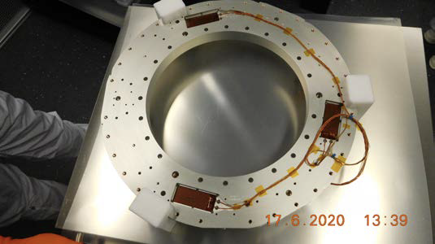
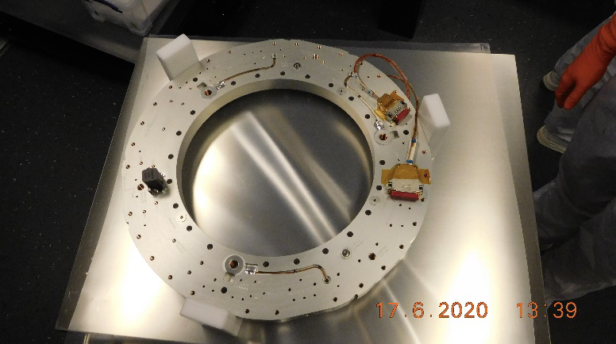

Changelog
- 19/06/2023 — v0.7
-
-
bringing the commanding manual up-to-date with the current implementation of the Common-EGSE, the test scripts and the situation in the test houses.
-
Section on the plato-test-prep repository has been removed (was Section 3.3)
-
Data Acquisition: updates in all sections
-
Configuration and Setups: updates in all sections
-
Common-EGSE startup, shutdown and sleep: updates in all sections
-
Utility functions: updates in all sections
-
Operating the N-FEE: updates in all sections
-
Operating the TCS EGSE: only editorial updates
-
Operating the OGSE: updates in all sections
-
Operating the tests, system states: only editorial changes
-
Appendix A: removed unimplemented ALT mode for
ccd_sideand updated other commands with correct parameters -
Appendix B: updated commands for visited positions
-
-
added a backlink to the CGSE Documentation web site for your convenience. It’s at the top of the HTML page.
-
- 12/06/2023 — v0.6
-
-
move the commanding manual to the CGSE documentation page and converted into asciidoc.
-
Update section on data structure
-
- 14/06/2021 — v0.5
-
-
Update section 11.3 (rem. col_end from BB signatures)
-
- 03/05/2021 — v0.4
-
-
Update sections 3.2, 3.3, 7.3, 7.4
-
Sections 11.1 & 11.3 Change ccd_side & EF convention
-
New sections 5.3, 6.3, 11.4 and 14
-
Update sections 3.2, 3.3, 7.3, 7.4
-
Sections 11.1 & 11.3 Change ccd_side & EF convention
-
New sections 5.3, 6.3, 11.4 and 14
-
Purpose
This document describes the concepts and some practicalities relative to the commanding of the PLATO Cameras (AEU, FEE) and various GSEs to be controlled during the ground-based testing of the PLATO Cameras.
The document shall be used to train members of the PLATO camera test team in operating the Common-EGSE system and write commanding scripts for camera-level tests.
The present version still contains a few ‘TBW’, some of which will be filled thanks to inputs from the Test Houses (TH), describing the location-specific GSE controls.
Documents and Acronyms
Applicable documents
| ID | Document Title | Document Number | Issue |
|---|---|---|---|
Reference Documents
| ID | Document Title | Document Number | Issue |
|---|---|---|---|
RD-01 |
CAM Test EGSE User Manual |
PT-EVO-SYS-MA-0261-1 |
1 |
RD-02 |
Common-EGSE User Manual |
PLATO-KUL-PL-MAN-0001 |
0.1 |
RD-03 |
Test Specification |
PLATO-KUL-PL-TS-0001 |
2.7 |
RD-04 |
Common-EGSE ICD |
PLATO-KUL-PL-ICD-0002 |
1.0 |
RD-05 |
PLATO-AEU CAM TEST EGSE TMTC ICD |
PTO-ECO-SYS-ICD-0188 |
2B |
RD-06 |
PLATO N-FEE ICD |
PLATO-MSSL-PL-ICD-0002 |
9.0 |
RD-07 |
Reverse clocking for N-CAMs |
PLATO-MSSL-PL-TN-0015 |
1.0 |
RD-08 |
N-FEE Readout Operations |
PLATO-MSSL-PL-TN-0012 |
2.1 |
RD-09 |
PLATO PL TCGSE UNIT Subsystems and Equipment ICD and IDS |
PTO-AST-PL-TCGSE-ICD-0012 |
10.0 |
RD-10 |
PLATO Instrument Coordinate Systems |
PLATO-OHB-PL-LI-0009 |
05 |
RD-11 |
PLATO Room temperature collimator user manual |
PLATO-UOL-PL-RP-0004 |
1 |
Acronyms
AEU |
Ancillary Electronics Unit |
API |
Application Programming Interface |
CAM |
Camera |
CGSE |
Common-EGSE |
CSL |
Centre Spatial de Liège |
COT |
Commercial off-the-shelf |
CTI |
Charge Transfer Inefficiency |
DPU |
Data Processing Unit |
DSI |
Diagnostic SpaceWire Interface |
EGSE |
Electrical Ground Support Equipment |
EOL |
End Of Life |
FEE |
Front End Electronics |
FPA |
Focal Plane Assembly |
GSE |
Ground Support Equipment |
IAS |
Institut d’Astrophysique Spatiale |
ICD |
Interface Control Document |
MGSE |
Mechanical Ground Support Equipment |
MMI |
Man-Machine Interface |
OGSE |
Optical Ground Support Equipment |
OS |
Operating System |
PID |
Process Identifier |
PPID |
Parent Process Identifier |
PLM |
Payload Module |
REPL |
Read-Evaluate-Print Loop, e.g. the Python interpreter prompt |
RMAP |
Remote Memory Access Protocol |
SpW |
SpaceWire |
SRON |
Stichting Ruimte-Onderzoek Nederland |
SUT |
System Under Test |
SVM |
Service Module |
TBC |
To Be Confirmed |
TBD |
To Be Decided or To Be Defined |
TBW |
To Be Written |
TCS |
Thermal Control System |
TH |
Test House |
TOU |
Telescope Optical Unit |
TS |
Test Scripts |
TV |
Thermal Vacuum |
USB |
Universal Serial Bus |
1. Introduction
1.1. Contents
This document describes the usage of the PLATO Common-EGSE to command the PLATO camera (SUT) and the ground support equipment (GSE) during the PLATO camera ground testing.
Throughout this document, we use the following notation:
-
a command to be executed in a terminal on either the egse-server or on the client machine.
$ command
-
a command to be executed in a Python session. This Python session will always be running on the client machine.
>>> command
1.2. EGSE commanding software environment
The user interface to the PLATO camera EGSE is a software application developed at KU Leuven in collaboration with the test houses for site specific components. It provides graphical user interfaces to control the software processes in the system, monitor telemetry parameters, provide the operator with quick-look analysis images of the camera detectors, etc. It also features a commanding interface in Python. The commanding logic is entirely defined in Python. The hardware interfaces have been implemented in Python (possibly accessing a library written in the C programming language), and the user is accessing these by executing higher-level Python functions in a Python interpreter.
1.3. How different user profiles use the software
-
test-operator: running a test, launching scripts and inspecting results of quick look analysis script at the test house. The test operator is knowledgeable of the Common-EGSE, Test Scripts, all GSE and basic operation of the PLATO Camera (SUT).
-
test-developer: translating test specification into commanding scripts, writing quick-look analysis scripts.
-
offline-analyst: loads the test data from the archive and process this data for validation and feedback.
-
site-operator: manages the test-infrastructure, i.e. the test-environment in the TH, administration of egse-server and client machines.
-
site-developer: implements test house specific software for test equipment used at test houses. This includes but is not limited to device drivers, GUI applications, local setups.
Typical flow of events and responsibilities:
-
Long before the tests are executed, the site-developer implements the interfaces to the test-equipment in the Common-EGSE.
-
Months before the test, the test-developer turns the test-specification into a commanding script.
-
Minutes before the test, the site-operator starts up the system, activates all connections, launches GUIs, loads the proper system configuration into the system, and gives a go-ahead to the test-operator.
-
At t0, the test-operator launches the execution of the commanding script and follows it in real-time.
-
At the end of the execution, the analyst gets hold of the data and starts the analysis.
This commanding manual is mainly targeted at the test developers, the test operators and the analysts. The site-operators and site-developers will find most of the information they need in the Common-EGSE installation manual and user manual.
2. Software Overview
The PLATO commanding during ground-based testing resides upon three GitHub repositories:
Amongst others, the documentation will point you to the installation guides, list the low-level commands that are available in the Common-EGSE, list the low-level building blocks implemented in the test scripts etc.
2.1. The plato-common-egse GitHub repository
This repository contains the background infrastructure to interface with the actual hardware in the test housess. The complete documentation can be found in the link above, and in RD-02, see Reference Documents.
In a nutshell, it provides access to all the necessary functions to
-
Operate the camera under test
-
Operate all devices in the test-environment (in or out of the TVAC chamber)
-
Record all telemetry
-
From the camera (image data & HK)
-
From the test-environment (HK)
-
-
Maintain the setup and calibration file information under configuration control (see ‘setup’ below).
-
Command the camera and the test-environment devices from Python scripts (see plato-test-scripts)
The THs are expected to contribute to this repository, to implement the interfaces to their own environment and devices, so they should fork this repository in order to be able to create pull requests.
The test-operators are not expected to contribute to this repository, so they should clone the repository.
2.2. The plato-test-scripts GitHub repository
This repository contains the Python scripts
-
for commanding the tests as defined in the test specification,
-
for analysing the data
The commanders and the THs are expected to contribute to this repository, so everyone should fork it.
2.3. The plato-cgse-conf GitHub repo
This repository holds the setups saved during the tests under configuration control. The concept of setup is explained in Chapter 6.
No one is expected to contribute directly to this repository as it is maintained by the Common-EGSE. The repository can be cloned for inspection.
2.4. Software installation
Operators use the software installation at the test house on the operational machine. The installation is read only and under configuration control. Only official releases shall be installed on the operational machines. The installation is maintained by the site-operator. Please refer to the on-line documentation of the Common-EGSE for full installation details.
$ git clone https://github.com/IvS-KULeuven/plato-common-egse.git $ git checkout tags/<release-tag> -b <release-tag>-branch $ python3.8 setup.py install --home=/cgse
The test-developer uses an installation that is more suited for development of scripts and can be changed. The test-developer has forked the repo on the GitHub website to her personal GitHub account and clones the repo from that account. She works in a virtual environment. Please refer to the Common-EGSE on-line docs for full details.
$ git clone https://github.com/<github-username>/plato-common-egse.git $ source venv/bin/activate $ python3.8 setup.py develop
Please note that the installation examples above are simplified and serve as a reminder. The full installation process is detailed in the on-line Common-EGSE documentation.
2.5. Naming Convention
The table below summarises the coding style that we have adopted for this project. More detailed information can be found in the on-line documentation at github.io: Development notions: Style Guide
| Type | Style | Examples |
|---|---|---|
Variables, building_block parameters, Entries in setup files |
lowercase with underscores |
key, last_value, model, index, user_info |
Methods, functions, building_blocks |
lowercase with underscores |
get_value, set_mask, create_image |
Classes |
CapWords (no underscores) |
ProcessManager, ImageViewer, CommandList, Observation, MetaData |
Constants |
UPPERCASE with underscores |
MAX_LINES, BLACK, COMMANDING_PORT |
Modules & Packages |
lowercase without underscores |
dataset, commanding, multiprocessing |
- Top-level scripts
-
Top-level scripts start with the test identifier from the test specification, followed by a descriptive name in lowercase, words separated by underscores, e.g.,
cam_tvpt_010_best_focus_determination.py. - Building blocks
-
Building blocks are normal function definitions that are decorated with @building_block to identify them as separated by one underscore, i.e., snake_case.
- User utility functions
-
User functions are normal Python functions and follow normal Python function naming conventions, i.e., all lower case and words separated by underscores, i.e., snake_case.
3. Test script architecture
3.1. Overview
At the user level, the PLATO commanding resides upon a few key concepts
-
Building-block: a building block is a Python function implementing the commands corresponding to a logical entity within a test (a Lego©-bloc) or an entire test (the Lego©-house, called “test-script”).
-
Test-script: a test-script is a building block encapsulating all the commands necessary for a given test. The name of a test-script should identify it in the test-specification document (RD-03). The test-script should be unique, i.e. the test script for any given test should be useable in all test-houses.
-
Execution: building blocks, and only building blocks, can be executed, i.e. run on the operational machine inside the test-environment.
-
Observation: executing a building block triggers the creation of an “observation”. An observation is defined by a unique “observation identifier” (obsid) and lasts as long as the execution of the corresponding test (building block).
-
Setup: a Setup encapsulates the complete configuration of the test-environment (test-equipment) and of the camera (test-item) as well as all calibration files associated either to the hardware, or necessary for a given test.
More information on some of these elements are given in the next sections. The figure below describes the generic software architecture in place for the PLATO commanding:
-
At the top level
-
a test script implements an entire test.
-
-
At an intermediate level
-
The test script can call Python functions (e.g. “calculate the next FOV position to visit”) or lower level building blocks (e.g. “go to the next FOV position” or “acquire images over a 5x5 dither pattern”)
-
Building blocks can call other building blocks, or regular Python functions (recursion is forbidden within building blocks)
-
Functions can call other functions, but should not call building blocks
-
-
At the lowest level, the Common-EGSE software provides all the “atomic commands” necessary to interface with the hardware. This layer allows to provide the users with user-friendly commands (e.g. human-readable parameter names, and no bit-field or hexadecimal numbers to provide).
-
The active test-setup is available at all levels to provide all necessary information with respect to hardware or calibration.
3.2. Building block
3.2.1. Definition of a building block
A building block is a Python function marked with a specific decorator in the code. That simply means that the line directly above the definition of the building block in the code should be @building_block:
Example of a building block definition:
@building_block
def move_filter_wheel(position=None):
# your code comes here
return TrueAll parameters of a building block are keyword parameters. That means the parameter name and its value must be specified when calling the building block.
...
move_filter_wheel(position="A")
...3.2.2. Building block justification
Execution: Building blocks are the only entity in the code that will be accepted for execution on the operational machines in the test-environments (THs).
Structure: a unique identifier (BBID) is automatically attributed to every building block entering the plato-test-scripts repository. At every moment during a test execution, the current BBID is recorded in the data (TBC).
Organising a test script into a logical structure and implementing the underlying building blocks accordingly will help structure the data, which in turn will be precious to ease the analysis.
For instance, if a test-script (BB1) is calling building blocks BB2 and BB3 sequentially, the telemetry will contain a sequence of timestamps where the individual building-blocks start, or end.
Note that, as a further convenience, a building block counter (BBCOUNT) will also be recorded, which is a natural number incremented by one every time the active BBID is changing, hence running from 0 to 4 in the example above (TBC).
3.2.3. The properties of a building block
Building blocks implement some safeguards, imposing a number of limitations on the code
-
Building blocks cannot be called recursively. Beware of building blocks calling other building blocks. Avoid too many layers. Avoid functions calling building blocks
-
At run time, the names and the values of every arguments of a building blocks must be explicitly given. Building blocks with many parameters are hence strongly discouraged
-
def my_block(param1, param2=3): is forbidden for 2 reasons-
Positional arguments are forbidden (
param1) -
All arguments must be given the default value
None(param2). The reason for this is that we want, when the building block is called, all arguments to be passed explicitly, not implicitly.
-
3.2.4. Using default argument values in a building block
|
Warning
|
we strongly discourage using this way of 'work around default parameters'. It is currently still implemented in the core system, but this behaviour might/will be removed in the future. |
In the code definition, it is not possible (prev. subsection).
It is nevertheless possible via an input file. The input file must
-
be in YAML format
-
bear the same name as the building block it corresponds to
-
be put in directory camtest/commanding/input
Example: building block camtest/commanding/hk_only.py
@building_block
def hk_only(wait_time=None):
time.sleep(wait_time)Corresponding input file camtest/commanding/input/hk_only.yaml
# 'hk_only' - Building Block
Args:
wait_time: 10 # System idle time [seconds]
3.2.5. Utility building blocks
A collection of low-level, general purpose building blocks is already provided in the commanding section of the plato-test-scripts (camtest/commanding), to help the test-developer, for instance to manipulate some hardware device, tune the OGSE light intensity, set the FEEs in different operating modes, acquire a number of full-frame images etc.
4. Test execution
4.1. Test execution: execute
The execution of a test is triggered by the Python function execute(). Like @building_block, it is a core functionality implemented by plato-test-scripts. It can be used with the following syntax:
>>> execute(building_block_name, param1=value1, param2=value2)All parameters must be specified by their name. No positional argument is allowed; hence the order of the parameters is not important. Note that the building block name does not have the paranthesis '()', only the name of the building block is given.
The execute command will start an observation and end the observation when the building block returns. Starting and ending an observation is an expensive operation in the sense that it notifies underlying mechanisms like the configuration and storage manager of the observation so they can take action. Therefore, although any building block can be executed using the execute(..) command, this should really only be used for higher level building blocks and from the Python prompt. Never use the execute(..) function inside a building block.
4.2. Preview the command sequence
|
Warning
|
This functionality will be removed in the future as it has only limited applicability and doesn’t give a full consistent view of the command sequence. |
It is possible to perform a dry-run of a building-block by running generate_command_sequence() instead of execute(), with the same syntax. Be aware that the duration of the dry run may be as long as the execution itself!
>>> generate_command_sequence(building_block_name, param1=value1, param2=value2)This feature will execute all building blocks and functions without actually sending command strings to the test equipment. The current implementation does not take return values from device queries into account which makes it less suited for test scripts that need this feedback for conditional processing, e.g., waiting until a temperature is reached.
Note that execute and generate_command_sequence will only work under a set of restrictive conditions
-
Disposing of software simulators for every piece of equipment addressed by the test. Simulators exist in the EGSE for the N-FEEs and most of the equipment to be used in CSL.
-
Emulating an operational environment on your machine. We refer you to the EGSE documentation for the details of what this entails
4.3. Executing short building blocks individually
The execute command will trigger the creation of an obsid and an associated data stream. In the case were the operator (e.g. while setting up and testing the TH environment) want to execute short commands or building blocks outside of the scope of a test-script, this is an overkill and will make the analysis of the resulting data very cumbersome, because the data will be distributed over many very very short obsids.
To work around this, it is possible to manually start and stop an observation
>>> start_observation("Running a few examples")Will start an observation, attribute it an obsid and the associated data stream, just like what happens at the start of an execute.
After that any command passed (individually or within a function/building block) and any data generated will be recorded as part of the running obsid:
>>> command(args)
>>> func(args)
>>> building_block(args)Finally
>>> end_observation()Will close the observation (or do nothing if none is running).
5. Data acquisition and storage
All device housekeeping data and all camera telemetry data (image data and FEE HK) are automatically stored by the Storage Manager. You don’t need to collect and save data from within your scripts. Data is stored in a location on the egse-server and accessible from the desktop client machines running the tests and analysis scripts. This location is defined in the environment variable PLATO_DATA_STORAGE_LOCATION, which points to a /data directory.
|
Note
|
Since release 2023.6.0+CGSE, the environment variable PLATO_DATA_STORAGE_LOCATION will not include the SITE ID anymore.
|
Several types of data are generated during a test campaign
-
Housekeeping telemetry (saved in CSV files)
-
From the test-item (e.g. TOU TRP-1 temperature)
-
From the test-environment (e.g. OGSE filter wheel position)
-
-
SpaceWire packets and register maps received from the FEE (saved in HDF5 files)
-
Image data from the camera (saved in FITS files)
-
Command history logging the test executions
5.1. Housekeeping telemetry
The acquisition of housekeeping telemetry is automatically started by the egse-server. In practice that means that the telemetry from all devices connected to the active egse-server is automatically, and constantly recorded (see the Common-EGSE documentation for further details).
|
Important
|
Please note that all timestamps saved in housekeeping files are UTC. |
The housekeeping telemetry is structured this way
-
One file per day saved in a sub-folder of ‘daily’. The sub-folder is the
YYYYMMDDof that day. -
One CSV file per source of telemetry, i.e. for example one from the TCS, one for the hexapod (controller), one for the FEE etc.
-
Each CSV file contains a timestamp in the first columns, and the various entries in the subsequent columns.
-
All TM are recorded at 1Hz by default. This is configurable on a per-device-controller basis (= per CSV file)
The csv filenames have the following structure:
YYYYMMDD_SITE_DEVICE.csv
Where:
-
YYYYMMDDis the day the telemetry was taken -
SITEis the identifier for the test facility: CSL, IAS, INTA, SRON, KUL, ESA, … -
DEVICEis a mnemonic referring to the device controller issuing these data
For example, the daily file at CSL for the Hexapod PUNA housekeeping on June 8th, 2023 is 20230608_CSL_PUNA.csv. The header of the CSV files contains explicit column-names. The complete information on the content and format of the telemetry files is contained in the ICD (RD-04, see Reference Documents).
Excerpt of the PUNA hexapod telemetry file 20230608_CSL_PUNA.csv:
timestamp,GCSL1_HEX_USER_T_X,GCSL1_HEX_USER_T_Y,GCSL1_HEX_USER_T_Z,GCSL1_HEX_USER_R_X,GCSL1_HEX_USER_R_Y,GCSL1_HEX_USER_R_Z,GCSL1_HEX_MACH_T_X,GCSL1_HEX_MACH_T_Y,GCSL1_HEX_MACH_T_Z,GCSL1_HEX_MACH_R_X,GCSL1_HEX_MACH_R_Y,GCSL1_HEX_MACH_R_Z,GCSL1_HEX_ALEN_1,GCSL1_HEX_ALEN_2,GCSL1_HEX_ALEN_3,GCSL1_HEX_ALEN_4,GCSL1_HEX_ALEN_5,GCSL1_HEX_ALEN_6,GCSL1_HEX_HOMED,GCSL1_HEX_IN_POS
...
2023-06-08T10:00:01.560+0000,0.014144539424,-0.003925761937,-3.489246984,-0.013989085157,0.0010419456108,-0.00799891817,0.390713812,0.1455886605,17.7970682,0.03226852454,0.06991046997,0.2646041152,205.93219583,206.1653351,205.52915657,205.97228441,205.88274269,206.14508725,True,True
2023-06-08T10:00:02.560+0000,0.014144539424,-0.003925761937,-3.489246984,-0.013989085157,0.0010419456108,-0.00799891817,0.390713812,0.1455886605,17.7970682,0.03226852454,0.06991046997,0.2646041152,205.93219583,206.1653351,205.52915657,205.97228296,205.88274269,206.14508725,True,True
2023-06-08T10:00:03.563+0000,0.014144539424,-0.003925761937,-3.489246984,-0.013989085157,0.0010419456108,-0.00799891817,0.390713812,0.1455886605,17.7970682,0.03226852454,0.06991046997,0.2646041152,205.93219583,206.1653351,205.52915657,205.97227986,205.88274269,206.14508725,True,True
2023-06-08T10:00:04.562+0000,0.014144539424,-0.003925761937,-3.489246984,-0.013989085157,0.0010419456108,-0.00799891817,0.390713812,0.1455886605,17.7970682,0.03226852454,0.06991046997,0.2646041152,205.93219583,206.1653351,205.52915657,205.97227986,205.88274579,206.14508725,True,True
2023-06-08T10:00:05.562+0000,0.014144539424,-0.003925761937,-3.489246984,-0.013989085157,0.0010419456108,-0.00799891817,0.390713812,0.1455886605,17.7970682,0.03226852454,0.06991046997,0.2646041152,205.93219583,206.1653351,205.52915657,205.97227986,205.88274269,206.14508725,True,True
2023-06-08T10:00:06.581+0000,0.014144539424,-0.003925761937,-3.489246984,-0.013989085157,0.0010419456108,-0.00799891817,0.390713812,0.1455886605,17.7970682,0.03226852454,0.06991046997,0.2646041152,205.93219583,206.16534276,205.52915967,205.97228296,205.88274579,206.14508725,True,True5.2. Observation
Image data are usually only generated during a test execution. In order to facilitate the selection of data pertaining to a particular test execution, we are using the concept of ‘observation’ interchangeably with the name “test”.
An observation corresponds to a single execution of a given test, i.e. a single use of the execute() command, or all commands executed between a start_observation and an end_observation.
A unique obsid is automatically attributed to every observation. The filenames of housekeeping files are constructed from the unique obsid and a limited set of useful metadata about the test execution, with the following structure:
TEST_SITE_SETUP_DEVICE_YYYYMMDD_HHMMSS.csv
where:
-
TESTis a unique test identifier, this is the first part of a full OBSID, -
SITEis the identifier for the test facility: CSL, IAS, INTA, SRON, KUL, ESA, … -
SETUPis the unique setup_id (section below) -
DEVICEis a mnemonic referring to the source of the data, e.g. the device controller issuing these data, the TCS EGSE, the N-FEE, etc. -
YYYYMMDD_HHMMSSpoints to the start of the test execution (UTC)
The first three items in the above list form the full OBSID. The OBSID can be abbreviated to the TEST-ID and the SITE-ID thereby omitting the SETUP-ID which can be automatically recovered from the meta data.
For instance, CSV files for observation 00757 performed at CSL could be:
-
00757_CSL_00009_PUNA_20201013_162037.csv -
00757_CSL_00009_CM_20201013_162037.csv
(PUNA points to a hexapod controller and CM refers to the Configuration Manager of the Common-EGSE).
For FITS files with the camera image data, the naming convention is similar (though we leave out the timestamp), with a sequencing number when the data volume justifies splitting of the data over multiple files.
-
00757_CSL_00009_N-FEE_CCD_00001_20201013_cube.fits -
00757_CSL_00009_N-FEE_CCD_00002_20201013_cube.fits
Note that we used to have two types of FITS files: FITS files in which the data is organised in a flat structure, and FITS files in which the data is organised in cubes (with filenames as described above). The former will have "image" in their names (rather than "cube") but will be removed once the corresponding cube-structure FITS file has been created.
All data corresponding to the obsid are gathered in a dedicated directory named ‘obs’. That means that the fraction of the regular housekeeping data acquired during the execution of the observation is duplicated in that directory, keeping the same format as in the “daily” directory.
The data is hence stored in two different directories:
-
A “daily” directory, accumulating housekeeping telemetry data all day long (e.g. for trend analysis). Each day has its own sub-folder.
-
An “obs” directory, recording only observation-specific data and housekeeping in sub-folders containing the camera name also, e.g.
01061_CSL1_duvelis observation 1061 taken in clean room 1 at CSL for the FM#3, i.e. Duvel.
5.3. Image data
Image data are saved for each test execution as FITS files, with the corresponding housekeeping in csv files (see above).
Images are saved in FITS format, as UNSIGNED integers. You will have to cast them to float explicitly in python to avoid negative numbers to be wrongly interpreted.
Splitting: The DPU monitors a set of "crucial parameters" (see further) and each time at least one of these changes, a new FITS file will be created, provided the FEE is in full-image mode (or full-image pattern mode). Additionally, a maximum number of extensions is specified in the configuration (TBD). When that number is achieved, the image data are split, i.e. a new FITS file is opened to store the next block of image data.
Slicing: In a future version of the software, it will be possible to insert a given command in the test scripts in order to force the creation of a new FITS file. This will allow for a more flexible slicing of the data, i.e. enforce a clearer structure of the data, matching the commanding logic, and will facilitate the data analysis and interpretation.
Crucial parameters: As mentioned before, the DPU monitors (for changes in) crucial parameters. These are:
-
the first and last row that will be transmitted (
v_startandv_end), -
the last column that will be transmitted (
h_end), -
the number of rows that will be dumped after the requested number of rows have been transmitted (
rows_final_dump), -
the readout order of the CCDs (
ccd_readout_order), -
and the FEE mode (
ccd_mode_config), which should become/stay full-image mode or full-image pattern mode.
5.3.1. Data products
During the camera tests, the DPU will be configured such that a specific part of the E- and/or F-side of the selected CCDs will be transmitted (in the form of SpW packets) for a specified number of cycles (as explained in Section 10.3.2). The following information will be reconstructed from these SpW packets and stored in FITS files:
-
the transmitted image data from the selected side(s) of the selected CCDs, for all cycles,
-
the transmitted serial pre-scan data of the selected side(s) of the selected CCDs, for all cycles,
-
the transmitted serial over-scan data of the selected side(s) of the selected CCDs, for all cycles,
-
the transmitted parallel over-scan data of the selected side(s) of the selected CCDs, for all cycles.
While the SpW packets come in, the individual exposures are stored in individual extensions in FITS files that carry "images" in their name. This type of data arrangement is called a "flat structure". When there’s a change in crucial parameters, a new FITS file will be constructed (with "cube" in its name), based on the flat-structure FITS file, in which the exposures are aggregated into cubes. The original, flat-structure file will be removed from the system.
For analysis, only the FITS files with the cubes will be available, and therefore only the structure of these will be discussed in the section below.
In case both sides of a CCD are selected, the image data of both sides will be stitched together before storing it in the FITS file. This will also be done for the parallel over-scan data (if present). For the serial pre-scan and the serial over-scan, the information is stored per CCD side.
5.3.2. Internal structure
Each of the extensions (apart from the PRIMARY extension) will occur only once and comprise a 3D data array and a header with the metadata that is specific to that extension. The name of an extension will reflect what type of data product it comprises (e.g. image data of the F-side of CCD2, serial pre-scan data of the E-side of CCD3, etc.).
Although we have provided a set of convenience functions (see below) to extract information from a FITS file without being exposed to the internal details, we want to explain the internal structure in more detail.
The following extensions can be included in the FITS files:
| Extension name | Content |
|---|---|
PRIMARY |
Contains only header information, with metadata that pertains to the whole data product (site name, etc.). This extension always be present. |
SPRE_<1/2/3/4>_<E/F> |
Serial pre-scan data for the E-/F-side of CCD1/2/3/4. This extension will occur once (with all exposures included), if that side of that CCD was transmitted. |
SOVER_<1/2/3/4>_<E/F> |
Serial over-scan data for the E-/F-side of CCD1/2/3/4. I f this information is transmitted, this extension will occur once. |
POVER_<1/2/3/4>_<E/F> |
Parallel over-scan data for the E-/F-side of CCD1/2/3/4. If this information is transmitted, this extension will occur once. |
IMAGE_<1/2/3/4>_<E/F> |
Image data for the E-/F-side of CCD1/2/3/4. This extension will occur once (with all exposures included), if that-side of that CCD was transmitted. |
WCS-TAB_<1/2/3/4>_<E/F> |
Table with a single column (with the name TIME) in which the relative time (in seconds) w.r.t. the first exposure (of any CCD (side)) in the file is listed. |
Example 1: 4CCDs, full frame, 10 cycles
Relevant FEE parameters (see Section 10.3.2]):
-
ccd_readout = [1, 2, 3, 4];
-
ccd_side = BOTH;
-
num_cycles = 10;
-
row_start = 0;
-
row_end = 4510 + 30 - 1 (i.e. 4510 rows from the image + 30 rows from the parallel over-scan);
Structure/extensions of the FITS file:
-
PRIMARY: The primary extension (PrimaryHDU object). This does not contain any transmitted data. -
For CCD1:
-
1 extension
SPRE_1_E: The serial pre-scan for the E-side of CCD1 (10 frames)
→ dimensions: 25 columns x (4510 + 30) rows x 10 layers -
1 extension
SPRE_1_F: The serial pre-scan for the F-side of CCD1 (10 frames)
→ dimensions: 25 columns x (4510 + 30) rows x 10 layers -
1 extension
SOVER_1_E: The serial over-scan for the E-side of CCD1 (10 frames)
→ dimensions: 15 columns x (4510 + 30) rows x 10 layers -
1 in extension
SOVER_1_F: The serial over-scan for the F-side of CCD1 (10 frames)
→ dimensions: 15 columns x (4510 + 30) rows x 10 layers -
1 extension
POVER_1_E: The parallel over-scan for the E-side of CCD1 (10 frames)
→ dimensions: 2255 columns x 30 rows x 10 layers -
1 extension
POVER_1_F: The parallel over-scan for the F-side of CCD1 (10 frames)
→ dimensions: 2255 columns x 30 rows x 10 layers -
1 extension
IMAGE_1_E: The image data for the E-side of CCD1 (10 frames)
→ dimensions: 2255 columns x 4510 rows x 10 layers -
1 extension
IMAGE_1_E: The image data of CCD1 (10 frames)
→ dimensions: 2255 columns x 4510 rows x 10 layers
-
-
For CCD2:
-
1 extension
SPRE_2_E: The serial pre-scan for the E-side of CCD2 (10 frames)
→ dimensions: 25 columns x (4510 + 30) rows x 10 layers -
1 extension
SPRE_2_F: The serial pre-scan for the F-side of CCD2 (10 frames)
→ dimensions: 25 columns x (4510 + 30) rows x 10 layers -
1 extension
SOVER_2_E: The serial over-scan for the E-side of CCD2 (10 frames)
→ dimensions: 15 columns x (4510 + 30) rows x 10 layers -
1 in extension
SOVER_2_F: The serial over-scan for the F-side of CCD2 (10 frames)
→ dimensions: 15 columns x (4510 + 30) rows x 10 layers -
1 extension
POVER_2_E: The parallel over-scan for the E-side of CCD2 (10 frames)
→ dimensions: 2255 columns x 30 rows x 10 layers -
1 extension
POVER_2_F: The parallel over-scan for the F-side of CCD2 (10 frames)
→ dimensions: 2255 columns x 30 rows x 10 layers -
1 extension
IMAGE_2_E: The image data for the E-side of CCD2 (10 frames)
→ dimensions: 2255 columns x 4510 rows x 10 layers -
1 extension
IMAGE_2_E: The image data of CCD2 (10 frames)
→ dimensions: 2255 columns x 4510 rows x 10 layers
-
-
For CCD3:
-
1 extension
SPRE_3_E: The serial pre-scan for the E-side of CCD3 (10 frames)
→ dimensions: 25 columns x (4510 + 30) rows x 10 layers -
1 extension
SPRE_3_F: The serial pre-scan for the F-side of CCD3 (10 frames)
→ dimensions: 25 columns x (4510 + 30) rows x 10 layers -
1 extension
SOVER_3_E: The serial over-scan for the E-side of CCD3 (10 frames)
→ dimensions: 15 columns x (4510 + 30) rows x 10 layers -
1 in extension
SOVER_3_F: The serial over-scan for the F-side of CCD3 (10 frames)
→ dimensions: 15 columns x (4510 + 30) rows x 10 layers -
1 extension
POVER_3_E: The parallel over-scan for the E-side of CCD3 (10 frames)
→ dimensions: 2255 columns x 30 rows x 10 layers -
1 extension
POVER_3_F: The parallel over-scan for the F-side of CCD3 (10 frames)
→ dimensions: 2255 columns x 30 rows x 10 layers -
1 extension
IMAGE_3_E: The image data for the E-side of CCD3 (10 frames)
→ dimensions: 2255 columns x 4510 rows x 10 layers -
1 extension
IMAGE_3_E: The image data of CCD3 (10 frames)
→ dimensions: 2255 columns x 4510 rows x 10 layers
-
-
For CCD4:
-
1 extension
SPRE_4_E: The serial pre-scan for the E-side of CCD4 (10 frames)
→ dimensions: 25 columns x (4510 + 30) rows x 10 layers -
1 extension
SPRE_4_F: The serial pre-scan for the F-side of CCD4 (10 frames)
→ dimensions: 25 columns x (4510 + 30) rows x 10 layers -
1 extension
SOVER_4_E: The serial over-scan for the E-side of CCD4 (10 frames)
→ dimensions: 15 columns x (4510 + 30) rows x 10 layers -
1 in extension
SOVER_4_F: The serial over-scan for the F-side of CCD4 (10 frames)
→ dimensions: 15 columns x (4510 + 30) rows x 10 layers -
1 extension
POVER_4_E: The parallel over-scan for the E-side of CCD4 (10 frames)
→ dimensions: 2255 columns x 30 rows x 10 layers -
1 extension
POVER_4_F: The parallel over-scan for the F-side of CCD4 (10 frames)
→ dimensions: 2255 columns x 30 rows x 10 layers -
1 extension
IMAGE_4_E: The image data for the E-side of CCD4 (10 frames)
→ dimensions: 2255 columns x 4510 rows x 10 layers -
1 extension
IMAGE_4_E: The image data of CCD4 (10 frames)
→ dimensions: 2255 columns x 4510 rows x 10 layers
-
Example 2: E-side of CCD2, 100 lines in partial-readout mode, 25 cycles
Relevant FEE parameters (see Section 10.3.2]):
-
ccd_readout = [2, 2, 2, 2];
-
ccd_side = E;
-
num_cycles = 25;
-
row_end = row_start - 100 - 1
Note that this means that the E-side of CCD2 will be transmitted 4x25 times.
Structure/extensions of the FITS file:
-
PRIMARY: The primary extension (PrimaryHDU object). This does not contain any transmitted data. -
For CCD2:
-
1 extension
SPRE_2_E: The serial pre-scan for the E-side of CCD2 (4x25 frames)
→ dimensions: 25 columns x (4510 + 30) rows x 100 layers -
1 extension
SOVER_2_E: The serial over-scan for the E-side of CCD2 (4x25 frames)
→ dimensions: 15 columns x (4510 + 30) rows x 100 layers -
1 extension
POVER_2: The parallel over-scan for the E-side of CCD2 (4x25 frames)
→ dimensions: 4510 columns x 30 rows x 100 layers -
1 extension
IMAGE_2: The image data of CCD2 (4x25 frames)
→ dimensions: 4510 columns x 4510 rows x 100 layers
-
5.3.3. Inspecting the content
In the test scripts analysis package, i.e. the fitsfiles.py in camtest.analysis.functions, a number of convenience functions have been implemented to access information in the FITS files without detailed knowledge of the file structure. The remainder of this section will explain how to use these functions to access the different data parts in the FITS files.
5.3.3.1. Overview
The structure of the FITS files can be inspected with the following commands:
>>> get_overview(filename)
The output looks like to this (here only the E-side of CCD1 has been transmitted, without parallel over-scan):
No. Name Ver Type Cards Dimensions Format 0 PRIMARY 1 PrimaryHDU 5 () 1 SPRE_1_E 0 ImageHDU 12 (25, 100) float64 2 SOVER_1_E 0 ImageHDU 12 (15, 100) float64 3 IMAGE_1 0 ImageHDU 28 (2255, 100) float64 4 SPRE_1_E 0 ImageHDU 12 (25, 100) float64 5 SOVER_1_E 0 ImageHDU 12 (15, 100) float64 6 IMAGE_1 0 ImageHDU 28 (2255, 100) float64 7 SPRE_1_E 0 ImageHDU 12 (25, 100) float64 8 SOVER_1_E 0 ImageHDU 12 (15, 100) float64 9 IMAGE_1 0 ImageHDU 28 (2255, 100) float64 10 SPRE_1_E 0 ImageHDU 12 (25, 100) float64 11 SOVER_1_E 0 ImageHDU 12 (15, 100) float64 12 IMAGE_1 0 ImageHDU 28 (2255, 100) float64
Alternatively, you can get hold of a list with the extension names with
>>> get_ext_names(filename)
5.3.3.2. Primary header
The primary header can be retrieved as
>>> primary_header = get_primary_header(filename)
Note that all headers (for the primary header as well as for the other datasets) are returned as astropy.io.fits.header.Header objects. To get hold of the value of a specific header key, use:
>>> header[key]
The relevant keywords in the primary header are:
| Keyword | Description |
|---|---|
LEVEL |
This is present for historical reason and is fixed at 2, which indicates that it is a FITS file in which the data has been arranged into cubes. |
V_START |
The index of the first row that is transmitted. |
V_END |
The index of the last row that is transmitted. |
H_END |
The index of the last column that is transmitted. |
ROWS_FINAL_DUMP |
The number of rows that are dumped after the requested number of rows is transmitted. |
TELESCOP |
Set to "PLATO". |
INSTRUME |
The camera ID (as taken from the setup). |
SITENAME |
The name of the test site at which the data was acquired. |
SETUP |
The setup ID. |
CCD_READOUT_ORDER |
String representation of an array with the order inwhich the CCDs will be read out. |
CYCLETIME |
The image cycle time [s]. |
READTIME |
The time needed to read out the requested part for a single CCD side [s]. |
OBSID |
The observation identifier. |
DATE-OBS |
The timestamp of the first exposure (of any side of any CCD in the file). |
CGSE |
Version of the Common EGSE with which the FITS file was produced. |
5.3.3.3. Images
The image data of a specific exposure (counting starts at zero) of a specific side of a specific CCD can be retrieved as a numpy array, as follows:
>>> image_data = get_image_data(filename, ccd_number, ccd_side, exposure_number)
You can retrieve the image cubes and header for a specific side of a specific CCD as follows:
>>> image_cube_data = get_image_cube_data(filename, ccd_number, ccd_side) >>> image_cube_header = get_image_cube_header(filename, ccd_number, ccd_side)
The relevant keywords in the image header are:
| Keyword | Description |
|---|---|
NAXIS1 |
The number of columns in the image area of the CCD, that are transmitted (max 2255). |
NAXIS2 |
The number of rows in the image area of the CCD, that are transmitted (max 4510). |
NAXIS3 |
The number of exposures. |
FOCALLEN |
The focal length of the telescope [mm]. |
CTYPE1/CTYPE2 |
Set to "LINEAR" to indicate that a linear coordinate transformation is used (between pixels and mm), both in the column and row direction. |
CTYPE3 |
Set to "TIMETAB" to indicate that the 3rd axis will be characterised by tabulated (time) values. In the older FITS files, this was set to "TIME-TAB" (consistent with the Greisen & Calabretta papers), but the C code underlying astropy and the traditional FITS viewer need it to be "TIMETAB" instead. |
CUNIT1/CUNIT2 |
Set to "MM" to indicate that the focal-plane coordinates are expressed in mm, both in the column and row direction. |
CUNIT3 |
Set to "s" to indicate that the time is expressed in s. |
CDELT1/CDELT2 |
The pixels size [mm], both in the column and row direction. |
PS3_0 |
Set to "WCS-TAB_<1/2/3/4>_<E/F>" to indicate the the 3rd axis is characterised by the values in in the table, that is stored in a extension with that name. |
PS3_1 |
Set to "TIME" to indicate that the 3rd axis is characterised by the values in the table (see PS3_0) in the column with that name. |
SITENAME |
The name of the test site at which the data was acquired. |
EXTNAME |
The extension name, following the convention: IMAGE_<CCD number (1/2/3/4)>_<CCD side (E/F)> |
CCD_ID |
The CCD number (1/2/3/4). |
CROTA2 |
The orientation angle of the CCD [degrees]. This indicates over which angle the CCD reference frame is rotated w.r.t. the focal-plane reference plane, in counter-clockwise direction. |
CD1_1 |
The product of the pixel size and the cosine of the CCD orientation angle. |
CD1_2 |
The negative product of the pixel size and the sine of the CCD orientation angle. |
CD2_1 |
The product of the pixel size and the sine of the CCD orientation angle. |
CD2_2 |
The product of the pixel size and the cosine of the CCD orientation angle. |
CRVAL1 |
The focal-plane x-coordinate of the CCD origin [mm]. |
CRVAL2 |
The focal-plane y-coordinate of the CCD origin [mm]. |
CRPIX1 |
The column coordinate of the CCD origin w.r.t. the first transmitted column of the image area. |
CRPIX2 |
The row coordinate of the CCD origin w.r.t. the first transmitted row of the image area. |
OBSID |
The observation identifier. |
DATE-OBS |
The timestamp of the start of the data acquisition of the first exposure. |
5.3.3.4. Parallel over-scan
To get hold of the data (as a numpy array) of a parallel over-scan (if present) for a specific exposure (counting starts at 0) of a specific side of a specific CCD, execute the following command:
>>> parallel_overscan_data = get_parallel_overscan_data(filename, ccd_number, ccd_SIDE, exposure_number)
You can retrieve the parallel over-scan data and header for a specific side of a specific CCD as follows:
>>> parallel_overscan_cube_data = get_ parallel_overscan_cube_data(filename, ccd_number, ccd_side) >>> parallel_overscan _cube_header = get_ parallel_overscan_cube_header(filename, ccd_number, ccd_side)
The relevant keywords in the parallel over-scan header are:
| Keyword | Description |
|---|---|
NAXIS1 |
The number of columns in the parallel over-scan, that are transmitted. |
NAXIS2 |
The number of rows in the parallel over-scan of the CCD, that are transmitted. |
NAXIS3 |
The number of exposures. |
CTYPE3 |
Set to "TIMETAB" to indicate that the 3rd axis will be characterised by tabulated (time) values. In the older FITS files, this was set to "TIME-TAB" (consistent with the Greisen & Calabretta papers), but the C code underlying astropy and the traditional FITS viewer need it to be "TIMETAB" instead. |
CUNIT3 |
Set to "s" to indicate that the time is expressed in s. |
PS3_0 |
Set to "WCS-TAB_<1/2/3/4>_<E/F>" to indicate the the 3rd axis is characterised by the values in in the table, that is stored in a extension with that name. |
PS3_1 |
Set to "TIME" to indicate that the 3rd axis is characterised by the values in the table (see PS3_0) in the column with that name. |
FOCALLEN |
The focal length of the telescope [mm]. |
SITENAME |
The name of the test site at which the data was acquired. |
EXTNAME |
The extension name, following the convention: IMAGE_<CCD number (1/2/3/4)>_<CCD side (E/F)> |
CCD_ID |
The CCD number (1/2/3/4). |
OBSID |
The observation identifier. |
DATE-OBS |
The timestamp of the start of the data acquisition of the first exposure. |
5.3.3.5. Serial pre-scan
To get hold of the data (as a numpy array) of a serial pre-scan for a specific exposure (counting starts at 0) of a specific side of a specific CCD, execute the following command:
>>> serial_prescan_data = get_serial_prescan_data(filename, ccd_number, ccd_side, exposure_number)
You can retrieve the serial pre-scan data and header for a specific side of a specific CCD as follows:
>>> serial_prescan_cube_data = get_ serial_prescan _cube_data(filename, ccd_number, ccd_side) >>> serial_prescan _cube_header = get_ serial_prescan_cube_header(filename, ccd_number, ccd_side)
The relevant keywords in the serial pre-scan header are:
| Keyword | Description |
|---|---|
NAXIS1 |
The number of columns in the serial pre-scan (fixed at 25). |
NAXIS2 |
The number of rows in the serial pre-scan, that are transmitted. |
NAXIS3 |
The number of exposures. |
CTYPE3 |
Set to "TIMETAB" to indicate that the 3rd axis will be characterised by tabulated (time) values. In the older FITS files, this was set to "TIME-TAB" (consistent with the Greisen & Calabretta papers), but the C code underlying astropy and the traditional FITS viewer need it to be "TIMETAB" instead. |
CUNIT3 |
Set to "s" to indicate that the time is expressed in s. |
PS3_0 |
Set to "WCS-TAB_<1/2/3/4>_<E/F>" to indicate the the 3rd axis is characterised by the values in in the table, that is stored in a extension with that name. |
PS3_1 |
Set to "TIME" to indicate that the 3rd axis is characterised by the values in the table (see PS3_0) in the column with that name. |
SITENAME |
The name of the test site at which the data was acquired. |
EXTNAME |
The extension name, following the convention: SPRE_<CCD number (1/2/3/4)>_<CCD side (E/F)> |
CCD_ID |
The CCD number (1/2/3/4). |
OBSID |
The observation identifier. |
DATE-OBS |
The timestamp of the start of the data acquisition of the first exposure. |
5.3.3.6. Serial over-scan
To get hold of the data (as a numpy array) of a serial over-scan for a specific exposure (counting starts at 0) of a specific side of a specific CCD, execute the following command
>>> serial_overscan_data = get_serial_overscan_data(filename, ccd_number, ccd_side, exposure_number)
You can retrieve the serial over-scan data and header for a specific side of a specific CCD as follows:
>>> serial_overscan_cube_data = get_ serial_overscan_cube_data(filename, ccd_number, ccd_side) >>> serial_overscan _cube_header = get_ serial_overscan_cube_header(filename, ccd_number, ccd_side)
The relevant keywords in the serial over-scan header are:
| Keyword | Description |
|---|---|
NAXIS1 |
The number of columns in the serial over-scan. |
NAXIS2 |
The number of rows in the serial over-scan, that are transmitted. |
NAXIS3 |
The number of exposures. |
CTYPE3 |
Set to "TIMETAB" to indicate that the 3rd axis will be characterised by tabulated (time) values. In the older FITS files, this was set to "TIME-TAB" (consistent with the Greisen & Calabretta papers), but the C code underlying astropy and the traditional FITS viewer need it to be "TIMETAB" instead. |
CUNIT3 |
Set to "s" to indicate that the time is expressed in s. |
PS3_0 |
Set to "WCS-TAB_<1/2/3/4>_<E/F>" to indicate the the 3rd axis is characterised by the values in in the table, that is stored in an extension with that name. |
PS3_1 |
Set to "TIME" to indicate that the 3rd axis is characterised by the values in the table (see PS3_0) in the column with that name. |
SITENAME |
The name of the test site at which the data was acquired. |
EXTNAME |
The extension name, following the convention: SOVER_<CCD number (1/2/3/4)>_<CCD side (E/F)> |
CCD_ID |
The CCD number (1/2/3/4). |
OBSID |
The observation identifier. |
DATE-OBS |
The timestamp of the start of the data acquisition of the first exposure. |
5.3.3.7. Time
To get hold of the relative time (as a numpy array) in seconds w.r.t. the first exposure (of any side of any CCD in the file) for the exposures for a specific side of a specific CCD, execute the following command:
>>> from camtest.analysis.functions.fitsfiles import get_relative_time >>> relative_time = get_relative_time(filename, ccd_number, ccd_side) >>> relative_time = get_relative_time(hdu_list_object, ccd_number, ccd_side)
The absolute time (as a numpy array) in seconds since epoch 1958, for the exposures for a specific side of a specific CCD, can be retrieved as follows:
>>> from camtest.analysis.functions.fitsfiles import get_absolute_time >>> absolute_time = get_absolute_time(filename, ccd_number, ccd_side) >>> absolute_time = get_absolute_time(hdu_list_object, ccd_number, ccd_side)
5.3.3.8. Focal-plane coordinates
To convert image pixel coordinates (row, column) for a given side of a given CCD to focal-plane coorinates (x, y), in mm, execute:
>>> from camtest.analysis.functions.fitsfiles import get_fp_coordinates >>> x, y = get_fp_coordinates(filename, ccd_number, ccd_side, row, column) >>> x, y = get_fp_coordinates(hdu_list_object, ccd_number, ccd_side, row, column)
5.3.3.9. Astropy WCS objects
It is possible to load the headers into an astropy WCS object, which can be used for coordinate conversions:
>>> from astropy.io import fits >>> from astropy.wcs import WCS >>> with fits.open(<filename>) as hdul: ... header = hdul[<extension name>].header >>> wcs = WCS(header)
For the older FITS files, you may get this error message (see #1714):
ERROR: ValueError: ERROR 5 in wcsset() at line 2352 of file cextern/wcslib/C/wcs.c: Invalid parameter value. ERROR 3 in tabset() at line 747 of file cextern/wcslib/C/tab.c: Invalid tabular parameters: Each element of K must be positive, got 0.
This can be circumvented by correcting the value for the CTYPE3 keyword (before creating the WCS object):
>>> header["CTYPE3"] = "TIMETAB"
5.4. Telecommand history
The complete telecommand history is not yet saved but can be reconstructed from the setup_id (see below) and the obsid-table. The obsid-table.txt is a text file located at the root of the data storage location. The file contains one entry per observation, associating
-
the main parameters of the observation, obsid and site
-
the time of execution
-
the setup_id active at execution time (contains the version number of the plato-test-script on the operational server)
-
The building block name
-
All parameter names and values passed to the execute command
The following lines are examples taken from the obsid-table.txt file at CSL:
01108 CSL1 00084 2023-06-07T08:56:22.832+0000 cam_single_cube_int_sync(theta="8.3", phi="12.0", num_cycles="5", exposure_time="0.2", n_rows="1000", attenuation="0.00413")
01109 CSL1 00084 2023-06-07T08:57:30.003+0000 cam_single_cube_int_sync(theta="8.3", phi="12.0", num_cycles="5", exposure_time="0.2", n_rows="1000", attenuation="0.00413")
01110 CSL1 00084 2023-06-07T09:02:16.140+0000 check_and_move_relative_user(cslmodel="egse.coordinates.cslmodel.CSLReferenceFrameModel", translation="[0, 0, 0.01]", rotation="[0, 0, 0]", setup="egse.setup.Setup", verbose="True")
01111 CSL1 00084 2023-06-07T09:03:09.426+0000 cam_single_cube_int_sync(theta="8.3", phi="12.0", num_cycles="5", exposure_time="0.2", n_rows="1000", attenuation="0.00413")
01112 CSL1 00084 2023-06-07T09:06:40.668+0000 check_and_move_relative_user(cslmodel="egse.coordinates.cslmodel.CSLReferenceFrameModel", translation="[0, 0, 0.005]", rotation="[0, 0, 0]", setup="egse.setup.Setup", verbose="True")
01113 CSL1 00084 2023-06-07T09:08:28.446+0000 cam_single_cube_int_sync(theta="8.3", phi="12.0", num_cycles="5", exposure_time="0.2", n_rows="1000", attenuation="0.00413")
01114 CSL1 00084 2023-06-07T09:29:58.225+0000 cam_single_cube_int_sync(theta="8.3", phi="12.0", num_cycles="5", exposure_time="0.2", n_rows="1000", attenuation="0.00413")
01115 CSL1 00084 2023-06-07T09:37:08.043+0000 cam_single_cube_int_sync(theta="8.3", phi="12.0", num_cycles="5", exposure_time="0.2", n_rows="1000", attenuation="0.00413")
01116 CSL1 00084 2023-06-07T09:40:39.185+0000 cam_single_cube_int_sync(theta="8.3", phi="12.0", num_cycles="5", exposure_time="0.2", n_rows="1000", attenuation="0.00413")The obsid-table.txt file is explained in more detail in the Interface Control Document (ICD) [RD-04].
6. Configuration and Setups
The complete documentation on the EGSE configuration and on the concept of Setup can be found in the developer manual.
Setup is the concept we attach to the entity encapsulating the entire set of
-
Identifiers and configuration items
-
Calibration values and calibration files
Necessary to
-
Describe the test-environment and the item under test
-
operate the test
6.1. Example Setup file
A snippet of a setup file is shown below. It shows the tree structure of the YAML file. At the top level are the main components: gse (devices), camera (fpa, tou, fee), telemetry, etc. The snippet only shows part of the Setup. Under the gse branch we have hexapod and stages and many more that are not shown. All ground equipment that is part of the test setup shall have an entry under the gse branch. The information that shall go into these entries is device identification, calibration information, specific device settings, etc.
Everything that is connected to the Camera, i.e. SUT, shall go under the camera branch. This is e.g. identifiers for the TOU, FEE, FPA, DPU, CCD, …, calibration information, defaults, numbering, avoidance information, etc.
|
Note
|
The gse branch is also used by the process manager to determine which devices are part of the Setup and for which devices it should present a status LED and a start/stop button. |
The users are allowed to modify or add items and branches to the setup and save a new version of it. As an example, the stages branch in this example contains calibration values defining metrology of the rotation and translation stages used to position the light beam at CSL.
NavigableDict ├── site_id: CSL2 ├── position: 2 ├── gse │ ├── hexapod │ │ ├── device: class//egse.hexapod.symetrie.puna.PunaProxy │ │ ├── device_name: Symetrie Puna Hexapod │ │ ├── ID: 2B │ │ ├── time_request_granularity: 0.1 │ │ ├── CID: 603382 │ │ └── label: 172543 - PUNA │ ├── stages │ │ ├── ID: 1 │ │ ├── BIG_ROTATION_STAGE_ID: 420-20913 │ │ ├── SMALL_ROTATION_STAGE_ID: 409-10661 │ │ ├── TRANSLATION_STAGE_ID: 5101.30-943 │ │ ├── device: class//egse.stages.huber.smc9300.HuberSMC9300Proxy │ │ ├── device_name: Huber SMC9300 Stages │ │ ├── calibration │ │ │ ├── height_collimated_beam: 513.9 │ │ │ ├── offset_phi: 0.4965 │ │ │ ├── offset_alpha: 0.0 │ │ │ ├── offset_delta_x: 96.884 │ │ │ ├── phi_correction_coefficients: [-0.0049, 0.0003] │ │ │ ├── alpha_correction_coefficients: [0.0856, -0.5] │ │ │ └── delta_x_correction_coefficients: [-0.1078, 0.2674, -0.0059] │ │ ├── big_rotation_stage │ │ │ ├── avoidance: 3.0 │ │ │ ├── hardstop: 179.316 │ │ │ └── default_speed: 15000 │ │ ├── small_rotation_stage │ │ │ └── default_speed: 15000 │ │ └── translation_stage │ │ └── default_speed: 15000 ... ├── camera │ ├── TOU │ │ └── ID: BA-N1-11130000-FM-01 │ ├── fpa │ │ ├── avoidance │ │ │ ├── clearance_xy: 2.0 │ │ │ ├── clearance_z: 2.0 │ │ │ ├── vertices_nb: 60 │ │ │ └── vertices_radius: 100.0 │ │ ├── ID: N-FPA-11200000-FM-01 │ │ └── max_offset: 20 │ ├── dpu │ │ ├── device: class//egse.dpu.DPUProxy │ │ └── device_name: DPU ... ├── telemetry │ ├── dictionary: pandas//../../common/telemetry/tm-dictionary-brigand.csv │ └── separator: ; ├── sensor_calibration │ └── callendar_van_dusen │ └── EN60751 │ ├── A: 0.0039083 │ ├── B: -5.775e-07 │ └── C: -4.183e-12 ├── history │ ├── 0: Initial zero Setup for CSL2 │ ├── 1: Copy of CSL setup 97 (last EM setup) │ ├── 2: Removed TCS block
6.2. Available Setups
Setups will be available in the form of YAML files that are stored in the plato-cgse-conf repository and are located (probably) at ~/git where the repos are kept.
|
Warning
|
Do never edit these YAML files directly since they are maintained through changes on the operational machine. The configuration manager on the egse-server machine manages these Setups and brings them under configuration control in GitHub automatically upon submitting a new Setup. |
Browsing through the available setups can either be done in Python or via a GUI.
6.2.1. Browsing the Setups in Python
To get a list of the setups that are available in the system, execute the following command (to be imported from camtest):
>>> list_setups()
This will return a list of (setup identifier, site identifier) pairs, e.g.
('00037', 'CSL2', 'Use v2 of N-FEE sensor calibration for Chimay (#293)', 'brigand')
('00038', 'CSL2', 'Incl. nominal ranges for power consumption checks (#312)', 'brigand')
('00039', 'CSL2', 'Updated N-cam voltages for the AEU PSU (#315)', 'brigand')
('00040', 'CSL2', 'New CSLReferenceFrameModel [csl_model_from_file]', 'brigand')
('00041', 'CSL2', 'Putting back N-cam voltages for the AEU PSU', 'brigand')
('00042', 'CSL2', 'updated stages calibration (beam height and phi correction)', 'brigand')
('00043', 'CSL2', 'Updated AEU voltages + voltage/current protection values (#324)', 'brigand')
('00044', 'CSL2', 'updated translation stage zero position', 'brigand')
('00045', 'CSL2', 'Update AEU configuration according to - NRB NCR-CSL-0036 disposition, email by Yves on 24/05/2023', 'brigand')The list_setups() command also allows you to filter the results, by using any of the keywords inside the setups. For instance, to list all the setups related to the STM version of the TOU, tested with the hexapod No 1 at CSL, you would type
>>> list_setups(camera__ID="achel") (1)
-
Note that the double underscore “__” is used to navigate the Setup. All parameters passed will be joined with a logical AND.
list_setups(camera__ID="achel")
('00004', 'CSL2', 'Copy camera and telemetry info for achel from CSL1 setup 38', 'achel')
('00005', 'CSL2', 'Incl. sensor calibration', 'achel')
('00006', 'CSL2', 'Updated hexapod ID', 'achel')
('00007', 'CSL2', 'Updated device name for DAQ6510 (#235)', 'achel')
('00008', 'CSL2', 'Using short sync pulses of 200ms (instead of 150ms)', 'achel')
('00009', 'CSL2', 'Copy camera and telemetry info for achel from CSL1 setup 45', 'achel')
('00010', 'CSL2', 'Incl. MGSE calibration coefficients (#255)', 'achel')
('00011', 'CSL2', 'New CSLReferenceFrameModel [csl_model_from_file]', 'achel')
('00012', 'CSL2', 'Changed offset_phi for validation purposes', 'achel')
('00013', 'CSL2', 'Recalibration of the SMA (#258)', 'achel')
('00014', 'CSL2', 'Updated reference Hartmann positions (#254)', 'achel')
('00015', 'CSL2', 'fixed alpha correction coefficients', 'achel')
('00016', 'CSL2', 'Incl. reference_full_76 (taken from CSL1 setup 46)', 'achel')
('00017', 'CSL2', 'New CSLReferenceFrameModel [csl_model_from_file]', 'achel')
('00018', 'CSL2', 'Copy camera and telemetry info for achel from CSL1 setup 47', 'achel')
('00019', 'CSL2', 'Updated x, y measured positions w.r.t. LDO input (#266)', 'achel')
6.2.2. Using the Setup GUI
To open the GUI to inspect all available setups, type the following command:
$ setup_ui
This will fire up a window as shown in Figure 3. The directory that is mentioned in the window title, is the one where the available setups are located.
A text field on the left-hand side allows you to filter the setups, similar to the arguments of the list_setups command from Section 6.2.1. You can navigate through the tree both with the '__' and the dot notation. For the available setups that pass the filtering, the site and setup identifier will appear in the drop-down menu, after either hitting the return key in the filter text field or by pressing the search button next to it.
6.3. Loading a Setup
After inspection of the available setups, a specific setup can be loaded, based on the identifier.
|
Important
|
loading a Setup means to load it in the system such that it then becomes the reference for the system configuration. This means it impacts the GlobalState and the ConfigurationManager! It is different from getting a copy of a Setup as a variable in a python script (see below). |
Ideally, the Setup will be loaded one single time at the start of a test phase, with a setup reflecting the HW present in the test environment. The preferred way to do so is via the setup GUI. That can be launched via
$ setup_ui
In python:
>>> from camtest import load_setup >>> setup = load_setup(7)
6.4. Inspecting, accessing, and modifying a Setup
First, make sure a Setup is already loaded in the system, and that you have a variable attached to a setup in your Python session. Here we call it setup.
You can get a Setup with the following command
>>> from camtest import get_setup >>> setup = get_setup(7)
This will read the content of Setup "00007" for the site you are currently at and assign it to a variable called setup.
|
Note
|
This has no effect on the system configuration (the ConfigurationManager will not know about it, and the GlobalState won’t be affected). |
6.4.1. Content of the setup
To print the entire content of the setup:
>>> print(setup)
The Setups, as well as all of their branches are “navigable dictionaries”. In practice that means that they have a tree structure, and every part of the tree can be accessed with a simple syntax, using dot notation (in contrast to using a double underscore (__) when filtering the available Setups).
6.4.2. Inspect a given branch or leaf
You can inspect any branch or leaf of the Setup by navigating the Setup and printing the result:
>>> print(setup.branch.subbranch.leaf)
For instance, printing the hexapod configuration at CSL:
>>> print(setup.gse.hexapod) NavigableDict ├── device: class//egse.hexapod.symetrie.puna.PunaProxy ├── device_name: Symetrie Puna Hexapod ├── ID: 2B ├── time_request_granularity: 0.1 ├── CID: 603382 └── label: 172543 - PUNA
6.4.3. Modify an entry
Any Setup entry can be assigned to with a simple assignment statement.
>>> setup.branch.subbranch.leaf = object
For instance:
>>> setup.camera.fpa.avoidance.clearance_xy = 3
6.4.4. Add a new entry
When you want to replace a complete sub-branch in the Setup, use a dictionary.
>>> setup.branch.subbranch = {}
>>> setup.branch.subbranch.leaf = object
for instance, to introduce the fpa subbranch in the example file above, one would write:
>>> setup.camera.fpa = {}
>>> setup.camera.fpa.ID = "STM"
>>> setup.camera.fpa.avoidance = {}
>>> setup.camera.fpa.avoidance.clearance_xy = 3
The above can be simplified by adding a predefined dictionary to the Setup:
>>> setup.camera.fpa = {"ID": "STM", "avoidance": {"clearance_xy": 3}}
6.5. Saving a new setup
The setups are stored under configuration control in the plato-cgse-conf repository. The EGSE is taking care of the interface with that repository when a user is submitting a new setup, with no additional action necessary than:
>>> response = submit_setup(setup, description="A senseful description of this setup") >>> if isinstance(response, Setup): ... setup = response ... else: ... print(response)
The new setup receives a unique setup_id, and a new entry is created in the list of setups. The new Setup is then loaded and made active in the configuration manager. When the Setup is processed by the system, brought under configuration control and no errors occurred, the new Setup is returned and will be assigned to the setup variable. In case of a error, the response contains information on the cause of the Failure and is printed.
|
Note
|
Do not directly catch the returned Setup in the setup variable, because you will lose your modified Setup in case of an error.
|
|
Note
|
the description is mandatory. Setups keep track of their history, so we strongly encourage to provide concise but accurate descriptions each time this command is used. |
7. Common-EGSE startup, shutdown, sleep
Intended readers: site-operator, test-operator
7.1. EGSE States
The following states have been defined for the EGSE system, as depicted in Figure 4:
-
EGSE OFF: all systems are powered off;
-
EGSE INIT: egse-server is booted, user logged in as plato-user;
-
EGSE STANDBY: critical housekeeping is being acquired, a sub-set of critical functions is available (e.g. temperature and safety monitoring of the test-environment and test-article);
-
EGSE ON: the system and hardware are ready to receive commands.
The transitions between these states are all handled by the Process Manager GUI. Under the hood, the Process Manager queries the setup (from the Configuration Manager) for information on the relevant processes. A distinction is made between core and devices processes.
7.2. Core & Device Processes
The following processes are considered as Common-EGSE core processes (depicted in the left panel of Figure 5]) and should always be running:
-
the Storage, which is responsible for archiving of housekeeping and image data (see Chapter 5);
-
the Configuration Manager, which manages of the configuration and setup of the system (see Chapter 6);
-
the Process Manager, which can be used to start device processes and monitor their status (typically via the corresponding GUI; see further),
-
the Logger, which collects all log messages from the different components of the Common-EGSE and test scripts. The log messages are saved in a log file at a location denoted by the environment variable PLATO_LOG_FILE_LOCATION.
-
the Synoptics Manager, which handles all generic and device independent housekeeping.
These processes are started automatically when the egse-server is booted. They cannot be re-started nor shut down via the Process Manager GUI; they can only be monitored there.
The device processes (depicted in the middle panel of Figure 5) are the so-called Control Servers that talk to the hardware Controllers (depicted in the right panel of Figure 5), for commanding and monitoring the devices.
These processes can be (re-)started and shut down individually from the Process Manager GUI. They will be running on the same machine as the Process Manager itself, which is the egse-server during normal operations.
7.3. Process Manager GUI
A desktop icon will be provided to start the Process Manager GUI. Alternatively, it can be started from the terminal command line with the following command:
$ pm_ui
This will fire up the GUI shown in Figure 6.
On the top left, an overview of the core services will be given. When a (new) Setup is loaded (see Section 6.3]), the content of the right part (with the device control servers) will be updated. Only the processes for the devices that are included in the current Setup will be shown.
A led in front of the process name will give you a quick impression of the state of the process. It can have the following colour for device processes:
-
green: the process is running and a connection with the hardware Controller has been established;
-
orange: the process is running, but the connection with the hardware Controller could not be established or was lost;
-
red: the process is not yet or no longer running or the process hangs for some undefined reason.
For the core processes, the led should always be green (indicating the process is running). In case one of them turns red, the corresponding core process is no longer alive, and the system may have to be re-started. Consult your site-operator in this case.
For the processes for which a "GUI" button is present, a GUI for the corresponding device can be opened in a separate window by pressing this button. A GUI for any device can be opened only once.
In contrast to the core processes, the device processes can be started from the Process Manager GUI, either in operational mode (when a hardware Controller is available) or in simulator mode (when no hardware Controller is available; for testing purposes).
7.3.1. EGSE OFF ⟷ EGSE INIT
When booting the egse-server, the core processes (i.e. Storage, Configuration Manager, Process Manager, Synoptics Manager, and Logger) will be started automatically. If the Process Manager GUI is started at this point and no Setup is loaded, the area with the device processes will be empty, and the five core processes will show a green LED in the GUI.
Note that the Process Manager GUI can only be used to monitor the core processes, not to (re-)start them. Should any of the LEDs for the core processes turn red (at any point), more detailed inspection of the system will be needed (and the system may even have to be re-booted).
Any GUI for these processes can be started by pressing the GUI button. Note that although the core processes are running on the egse-server, GUIs that are launched from the process manager will be started on your local machine, desktop client.
7.3.2. EGSE INIT ⟷ EGSE STANDBY
After having brought the Common-EGSE into its INIT state, a Setup must be loaded (see Section 6.3). This comprises (amongst others) all devices that are currently relevant to you. Once a Setup is loaded, the area with the device processes will be updated in the process manager GUI.
To start the critical device processes, click on the play/stop button for these devices. If all goes well, the LEDs for these processes will turn green in the GUI.
To shut down these critical processes (to return to INIT mode), the play/stop button of these devices must be pressed a second time.
Any GUI for these processes can be started by pressing the GUI button. The GUI will start on your local machine and can only be started once. Starting and stopping a GUI for a device has no effect on the state of that device.
7.3.3. EGSE STANDBY ⟷ EGSE ON
In STANDBY mode, only the critical processes will be running. The other device processes can be started by pressing their play/stop button, bringing the Common-EGSE into ON mode. To return to STANDBY mode, press the buttons again.
Any GUI for these processes can be started by pressing the GUI button.
8. Utility functions
8.1. Logging
Errors, warnings, general debugging or any useful information can be logged using the logging infrastructure. The logging infrastructure will take care that the messages you generate are stored in the log files associated with the measurement. It also takes care of visualising the messages to the operator.
Log levels: CRITICAL, ERROR, WARNING, INFO, DEBUG
To log a message in your script:
>>> from camtest import camtest_logger
>>> camtest_logger.info("Starting performance verification test")
2023-06-15 17:10:30,857: IPython: INFO: 1:camtest :Starting performance verification test
This will print a log message in the REPL and send a log record with the
message to the Logger. Messages for any of the above levels will end up
in the Common-EGSE log file, but only messages of level INFO and above
will also be printed in the terminal. So, if you need to check any
debugging messages, make sure you check the log file at
$PLATO_LOG_FILE_LOCATION.
8.2. Handling Errors
Inevitably, the code other developers write will generate error and exceptions. Whenever you expect an exception and you know what to do with it or how to handle it, catch it with the following construct:
try:
call_a_function_from_another_dev(...)
except ZeroDivisionError:
# do something to recover here
If you cannot handle the error, just let it pass to the next level in you script and eventually to the top building_block.
There is a fully detailed description of exception handling in the on-line Common-EGSE documentation in the section Exception Handling of the developer manual.
8.3. Coordinate transformations
Figure 7 below shows the schematic overview of the focal plane with the four CCDs. The focal-plane reference frame (xFP, yFP, zFP) is associated with the focal plane of one camera. Its origin is in the middle of the four CCDs (indicated by the blue dot in the figure) and the zFP–axis coincides with the optical axis (pointing towards the reader). The coordinates in the (xFP, yFP) reference frame are typically expressed in mm.
Each of the four CCDs has its own CCD reference frame (xCCD, yCCD) assigned to it (indicated with the small arrows in the figure). When keeping the readout register of a CCD at the bottom, the origin of the associated CCD reference frame is at the lower left corner of the CCD. The parallel charge transfer happens in the negative yCCD direction; the serial charge transfer in the readout register happens in the negative xCCD direction for the left detector half and in the positive xCCD direction for the right detector half. The coordinates in the (xCCD, yCCD) reference frame are typically expressed in pixels (where a pixel measures 18µm in both directions)
-
Definition of important coordinate systems
-
Field of view position (degrees) to CCD number and pixel coordinates
-
CCD number and pixel coordinates to field of view position (degrees)
Alternatively, the position in the focal plane can be expressed in field angles (θ, φ), as shown in Figure 8. The angular distance to the optical axis (marked with a blue dot in the figure) is denoted by angle θ, whereas φ represents the in-field angle, measured in counter-clockwise direction from the x FP axis.
The following coordinate conversions can be imported from egse.coordinates:
row, column, ccd_code = focal_plane_to_ccd_coordinates(x_fp, y_fp)
-
Identifies the CCD on which the given focal-plane coordinates (
x_fp,y_fp) are located, and returns the pixel coordinates (row,column) in the corresponding CCD reference frame and the CCD code (ccd_code).-
The input focal-plane coordinates (
x_fp,y_fp) should be specified in mm. -
The output pixels coordinates (
row,column) are given in pixels. -
The output CCD code
ccd_codeshould be 1/2/3/4 (as in Figure 7). -
If the given focal-plane coordinates do not fall on any of the CCDs, (None, None, None) is returned.
-
theta, phi = focal_plane_coordinates_to_angles(x_fp, y_fp)
-
Converts the given focal-plane coordinates (
x_fp,y_fp) to field angles (theta,phi).-
The input focal-plane coordinates (
x_fp,y_fp) should be specified in mm. -
The output field angles (
theta,phi) are given in degrees.
-
x_fp, y_fp = ccd_to_focal_plane_coordinates(row, column, ccd_code)
-
Converts the given pixel coordinates (
row,column) in the reference frame of the CCD with the given codeccd_codeto focal-plane coordinates (x_fp,y_fp).-
The input pixel coordinates (
row,column) should be given in pixels. -
The input CCD code ccd_code should be 1/2/3/4 (as in Figure 7).
-
The output focal-plane coordinates (
theta,phi) are given in mm.
-
x_fp, y_fp = angles_to_focal_plane_coordinates(theta, phi)
-
Converts the given field angles (
theta,phi) to focal-plane coordinates (x_fp,y_fp).-
The input field angles (
theta,phi) should be given in degrees. -
The output focal-plane coordinates (
x_fp,y_fp) are given in mm.
-
x_distorted, y_distorted = undistorted_to_distorted_focal_plane_coordinates(
x_distorted, y_distorted, distortion_coefficients, focal_length)
-
Converts the given undistorted focal-plane coordinates (
x_undistorted,y_undistorted) to distorted focal-plane coordinates (x_distorted,y_distorted), based on the given distortion coefficients(distortion_coefficients) and focal length (focal_length).-
The input undistorted focal-plane coordinates (
x_undistorted,y_undistorted) should be given in mm. -
The input distortion coefficients (
distortion_coefficients) should be an array [k1, k2, k3] with the coefficients of the distortion polynomial. -
The input focal length (
focal_length) should be given in mm. -
The output distorted focal-plane coordinates (
x_distorted,y_distorted) should be given in mm.
-
9. Operating the AEU EGSE
9.1. Introduction
On the spacecraft, the Ancillary Electronics Unit (AEU) is providing the FEE with the necessary stabilised secondary voltages and is also providing synchronisation signals to allow the different FEEs to synchronise their CCD readout cycle to the temperature control system (TCS) heater power switching.
On CAM level, we do not use a flight-like AEU. A dedicated AEU EGSE is providing the power supplies and synchronisation signals needed to operate a single N-type or single F-type camera.
The AEU EGSE supplies 6 voltages to the FEE:
-
V_CCD
-
V_CLK
-
V_AN1
-
V_AN2
-
V_AN3
-
V_DIG
Figure 9, Figure 10, Figure 11, and Figure 12 list the default voltage and current values for the N-AEU and F-AEU.
The AEU EGSE provides sync pulses to the N-FEE, F-FEE, TCS EGSE, and the EGSE (e.g. shutter controller of the OGSE). The following synchronisation signals can be configured:
-
Clk_N_ccdread_AEU/Clk_F_ccdread_AEU; -
Clk_heater(nominal/redundant in case of operating an F-CAM); -
Clk_50MHz(nominal redundant in case of operating an N-CAM)
The synchronisation output signal timings are shown in Figure 13.
9.2. AEU switch on and off
The AEU is switched on by the operator by powering up the unit. During the first 3 minutes after powering up no AEU commanding shall take place. The front-panel leds stand-by, self-test, functional check & TVAC, and alignment will be blinking until the system is ready.
9.3. Changing between AEU EGSE operation modes
The AEU EGSE has 4 functional modes:
Stand-by:
-
AEU EGSE has power and is ready to receive commands;
-
AEU EGSE distributes telemetry;
-
No sync signal is generated;
-
All FEE secondary voltages are down and cannot be activated.
Functional check & TVAC mode
-
AEU EGSE has power and is ready to receive commands;
-
AEU EGSE distributes telemetry;
-
All sync signals can be commanded on/off;
-
Secondary voltage generation can be commanded on and off.
(ambient) Alignment operating mode
-
AEU EGSE has power and is ready to receive commands;
-
AEU EGSE distributes telemetry;
-
Only following synchronisation signals can be commanded on/off:
-
Clk_50MHz_N-AEU_N-FEE; -
Clk_50MHz_F-AEUnom_F-FEE; -
Clk_50MHz_F-AEUred_F-FEE.
-
-
The secondary voltage generation can be commanded on/off;
Self-test
-
EGSE runs a self-diagnostic to check the status of its sync and secondary voltage outputs, and reports the results in its TM;
-
The GSE autonomously reverts to stand-by mode once the self-diagnostic is complete;
-
In this mode, the FEE and TCS EGSE have to be physically disconnected from the AEU EGSE, and their connectors on the AEU EGSE have to be connected to the test port connector on the AEU EGSE.
Switching modes:
>>> from egse.aeu.aeu import OperatingMode >>> aeu.set_operating_mode(OperatingMode.STANDBY) >>> aeu.set_operating_mode(OperatingMode.FC_TVAC) >>> aeu.set_operating_mode(OperatingMode.ALIGNMENT) >>> aeu.set_operating_mode(OperatingMode.SELFTEST)
Checking in which mode the AEU is:
>>> mode = aeu.get_operating_mode()
9.4. Power supply Unit: Setting and checking Current and voltage protections
To read the voltage and current setpoints, and the corresponding over-protection values (OVP and OCP) from the power supply units:
>>> v_ccd, v_clk, v_an1, v_an2, v_an3, v_dig = aeu.get_psu_voltage_setpoints()
>>> ovp_ccd, ovp_clk, ovp_an1, ovp_an2, ovp_an3, ovp_dig = aeu.get_psu_ovp()
>>> i_ccd, i_clk, i_an1, i_an2, i_an3, i_dig = aeu.get_psu_current_setpoints()
>>> ocp_ccd, ocp_clk, ocp_an1, ocp_an2, ocp_an3, ocp_dig = aeu.get_psu_ocp()To read the measured voltages and currents from the power supply units:
>>> v_ccd, v_clk, v_an1, v_an2, v_an3, v_dig = aeu.get_psu_voltages()
>>> i_ccd, i_clk, i_an1, i_an2, i_an3, i_dig = aeu.get_psu_currents()9.5. FEE voltages and currents
To read the measured values for the voltages and currents, and the corresponding protection values (UVP, OVP, and OCP):
For the N-CAM:
>>> v_ccd, v_clk, v_an1, v_an2, v_an3, v_dig = aeu.get_n_cam_voltages()
>>> uvp_ccd, uvp_clk, uvp_an1, uvp_an2, uvp_an3, uvp_dig = aeu.get_n_cam_uvp()
>>> ovp_ccd, ovp_clk, ovp_an1, ovp_an2, ovp_an3, ovp_dig = aeu.get_n_cam_ovp()
>>> i_ccd, i_clk, i_an1, i_an2, i_an3, i_dig = aeu.get_n_cam_currents()
>>> ocp_ccd, ocp_clk, ocp_an1, ocp_an2, ocp_an3, ocp_dig = aeu.get_n_cam_ocp()For the F-CAM:
>>> v_ccd, v_clk, v_an1, v_an2, v_an3, v_dig = aeu.get_f_cam_voltages()
>>> uvp_ccd, uvp_clk, uvp_an1, uvp_an2, uvp_an3, uvp_dig = aeu.get_f_cam_uvp()
>>> ovp_ccd, ovp_clk, ovp_an1, ovp_an2, ovp_an3, ovp_dig = aeu.get_f_cam_ovp()
>>> i_ccd, i_clk, i_an1, i_an2, i_an3, i_dig = aeu.get_f_cam_currents()
>>> ocp_ccd, ocp_clk, ocp_an1, ocp_an2, ocp_an3, ocp_dig = aeu.get_f_cam_ocp()9.6. FEE voltage memories
The AEU EGSE provides three memory positions to store default values for the FEE voltages: position A, B, C.
TBD: We store the nominal N-FEE values in memory position A, the nominal values for F-FEE in memory position B. + commands to store voltages, currents, protection values in the memory positions
9.7. AEU powering up and down FEE
To power on and off the N- or F-CAM, the following building blocks can be used:
>>> aeu.n_cam_swon()
>>> aeu.n_cam_swoff()
>>> aeu.f_cam_swon()
>>> aeu.f_cam_swoff()Note that switching on the camera, will put the AEU in functional check and TVAC mode. Switching off, will put it back to stand-by mode.
9.8. AEU configuring synchronisation signals
For the N-CAM, the synchronisation signals must be configured according to the desired image cycle time. Allowed values for the image cycle time are: 25, 31.25, 37.50, 43.75, and 50s. Note that - for image cycle times longer than 25s - not all heater sync pulses are synchronised with a Clk_ccdread sync pulse.
The following building blocks enable and disable the clock sync signals that are sent to the N-FEE (i.e. Clk_50MHz, Clk_ccdread (here with an image cycle time of 25s), and Clk_heater (synchronised with Clk_ccdread)):
>>> aeu.n_cam_sync_enable(image_cycle_time=25)
>>> aeu.n_cam_sync_disable()For the F_CAM, the following building blocks enable and disable the clock sync signals that are sent to the F-FEE (i.e.Clk_50MHz, Clk_F_ccdread, and Clk_heater (synchronised with Clk_F_ccdread); nominal clocks only):
>>> aeu.f_cam_sync_enable()
>>> aeu.f_cam_sync_disable()To check the sync status of the clocks (i.e. whether or not they are enabled) and whether or not a synchronisation failure has been detected:
For the N-CAM:
>>> clk_50mhz, clk_ccdread = aeu.get_n_cam_sync_status()
>>> clk_50mhz, clk_ccdread = aeu.get_n_cam_sync_quality()For the F-CAM:
>>> clk_50mhz_nom, clk_50_mhz_red, clk_ccdread_nom, clk_ccdread_red = aeu.get_f_cam_sync_status()
>>> clk_50mhz_nom, clk_50_mhz_red, clk_ccdread_nom, clk_ccdread_red = aeu.get_f_cam_sync_quality()For the SVM/heater:
>>> clk_50mhz_nom, clk_50mhz_red, clk_heater_nom, clk_heater_red = aeu.get_svm_sync_status()
>>> clk_50mhz_nom, clk_50mhz_red, clk_heater_nom, clk_heater_red = aeu.get_svm_sync_quality()9.9. AEU self test
When the AEU is put in self-test mode (see Section 9.3>), the loopback option can be set as follows:
>>> aeu.selftest(LoopBack.NO_LOOPBACK)
>>> aeu.selftest(LoopBack.F_CAM_NOM)
>>> aeu.selftest(LoopBack.F_CAM_RED)
>>> aeu.selftest(LoopBack.N_CAM)
>>> aeu.selftest(LoopBack.SVM_NOM)
>>> aeu.selftest(LoopBack.SVM_RED)9.10. AEU Telemetry parameters
9.11. Functional summary
At the start of a test day, the following two AEU building blocks must be executed (either independently or in another building block):
| For N-CAM testing: | For F-CAM testing: |
|---|---|
>>> aeu.n_cam_swon() >>> aeu.n_cam_sync_enable(image_cycle_time) |
>>> aeu.f_cam_swon () >>> aeu.f_cam_sync_enable() |
At the end of a test day, the following two AEU building blocks must be executed (either independently or in another building block):
| For N-CAM testing: | For F-CAM testing: |
|---|---|
>>> aeu.n_cam_sync_disable() >>> aeu.n_cam_swoff() |
>>> aeu.f_can_sync_disable() >>> aeu.f_cam_swoff() |
10. Operating the N-FEE
This section describes some basic principles on the N-FEE design and their practical impact on the N-FEE, CCD and camera operations.
10.1. Glossary
-
Parallel: direction parallel to the columns of the CCD (sometimes referred to as “vertical”).
-
Serial: direction parallel to the rows of the CCD (sometimes referred to as “horizontal”).
-
Readout register: single row of pixels below the active region of the CCD, used to transfer the charges in the serial direction towards the readout amplifier.
-
Partial readout: describes a CCD readout process in which only a given range of CCD rows are digitized. The rows between the region and the readout register are dumped during the readout process, i.e., the recorded signal is not digitized, it is not transferred to the FEE and will not appear in the data.
-
Windowing: refers to an FEE operating mode in which a pre-defined collection of windows on the CCDs is transferred to the DPU (during CAM-tests: the EGSE). The entire CCDs are readout and digitized, but only the pre-defined windows are transferred. The windowing mode is not used during alignment nor TVAC Camera testing and will not be discussed in this document.
-
Dumping: a row during readout means to continuously reset the readout register. The charges transferred from the active region of the CCD are lost. The absence of serial transfer makes it much faster to dump a line (90 µs) than to read it out normally (parallel transfer 110μs + serial transfer ~800μs).
-
Clearout: dumping all or part of a CCD.
-
E and F: the Plato CCDs dispose of 2 readout amplifiers. The left and right halves of the CCD are transferred to the corresponding amplifier (they behave almost like independent CCDs). For some reason that thy shall not ask, E and F refer to the right and left halves of a CCD (mnemonic: same order as in “FEE”) respectively.
-
Cycle: period between two long-synchronisation pulses (see below)
10.2. Introduction
10.2.1. N-FEE operating modes
A complete list of the N-FEE operating modes can be found in RD-06. The main modes for camera testing are:
-
ON: FEE powered on; CCDs powered off. This mode allows transitions to the test-pattern acquisition modes and to the STANDBY mode.
-
STANDBY: FEE powered on; CCDs powered on. The CCDs are properly biased but not readout, i.e., they are “indefinitely integrating”.
-
FULL_IMAGE:
-
allowing for full-CCD acquisition
-
highly configurable mode, also allows partial readout, reverse clocking, charge injection etc.
-
This is the workhorse for the ground-based tests.
-
-
WINDOWING:
-
allowing for the acquisition of multiple windows on the CCDs
-
Highly configurable mode, also allows partial readout, reverse clocking, charge injection etc.
-
This mode is the baseline for the in-flight operations.
-
10.2.2. Cycle, Timing and Synchronisation
Readout timing: The AEU sends synchronization pulses to the FEE every 6.25 seconds. Every pulse triggers a CCD-readout. In nominal operations, the 4 CCDs in one camera are addressed sequentially, i.e. readout one at a time, delayed by one pulse period, i.e. 6.25 seconds.
Cycle time and FEE configuration: all sync-pulses trigger a CCD readout. During nominal operations, every fourth pulse is “long” (it lasts 400ms instead of 200ms). We define the long-pulse period as the “cycle-time”. The cycle-time is important in two respects. First, in nominal operations, it takes 4 pulses to cycle over the 4 CCDs, i.e. each CCD is readout every cycle-time seconds. Second, the FEEs, i.e. the operating mode of the CCDs can be reconfigured whenever, but only when the FEE receives a long pulse. The FEE-register (containing the configuration parameters) is read during the pulse and the new configuration is immediately applied to the subsequent readouts, i.e. to integrations that were already on-going. This is important to keep in mind for the timing of your tests (see the timing examples in Appendix).
Exposure time: the PLATO cameras have no shutter. Consequently, the CCDs integration never stops. In practice, the sync-pulses trigger the readout process, and the exposure time effectively corresponds to the cycle-time minus the readout time. That means for instance that for a given cycle-time, the effective exposure time will be longer when performing partial readout than when acquiring full-CCD images.
Modifying the exposure time: the exposure time itself cannot be commanded at the level of the FEE. There are nevertheless various ways to modify the exposure time:
-
Increase it by changing the cycle time (see building block
n_cam_partial_cycle_config, Section 10.3.8) -
Shorten it by changing the order in which we address the CCDs in the course of a cycle: e.g. readout the same CCD at every pulse instead of cycling through the 4 CCDs (see parameter
ccd_orderin Section 10.3.2). -
Increase it by not addressing a given CCD. If some given CCDs are not addressed for readout, they continue to integrate. The next time they are addressed (after reconfiguring the FEE), their effective exposure time will have been much longer than the nominal exposure time (e.g. for dark current or faint ghosts).
-
Disregard the AEU sync pulses and use FEE internal sync-pulses instead. This allows for exposure times shorter than 6.25 seconds (e.g. ambient).
N-FEE internal sync-pulses: to accommodate short exposure times, the FEE can generate its own sync-pulses. The source of the sync pulses and period of the internal pulses can be configured with the following EGSE commands to the DPU:
>>> n_fee_set_internal_sync(int_sync_period) # in milliseconds
>>> n_fee_set_external_sync()You shouldn’t use these commands directly but rather call the dedicated building block:
>>> n_cam_partial_int_sync(...)|
Important
|
all N-FEE-generated pulses are long pulses. The cycle-time is hence identical to the CCD readout period, and there is no “natural” cycling through the 4 CCDs. Only when in DUMP mode, the 4 CCDs will be cycled also in internal sync. This is a feature of the DPU Processor implemented in the CGSE and is not available in flight. This CCD cycling in DUMP mode internal sync was implemented as of release 2023.19.0+CGSE. |
10.3. Commanding the N-FEEs
The following sections describe a collection of building blocks designed to configure and operate the FEEs and the CCDs. A list of the building blocks can also be found on the PLATO Confluence, in the PCOT space, by following links to the “On-Ground Testing”.
Examples of time-sequencing for some operational approaches are presented in Appendix 15.A.
In this section, for the sake of simplicity, the names of the building
blocks directly appear at the python prompt (>>>), but remember that a
commanding building block will exclusively be accepted either within
another building block or function, or (hence generating an observation)
by the execute command (see Section 4.1).
10.3.1. CCD and pixel references
Figure 17 shows the CCD numbering adopted for the commanding, as well as the CCD-specific coordinate systems adopted e.g. to specify the window coordinates. We will further refer to these coordinate systems as CCDn_PIX n = 1,2,3,4. Note that these
-
each cover an entire CCD, without interruption at the “border” between E & F (columns 2254 to 2255), and
-
differ from the CCD coordinate systems adopted in RD-10 (pix [1,1] close to the optical axis), as well as of those adopted at FEE-level (2 coord. systems/CCD, with the x-axes in opposite directions on E & F).
10.3.2. Standard building block parameters
Some of the input parameters are common to several building blocks. We list some below, to avoid repeating them for every building block.
-
num_cycles
-
num_cycles = 0 sets the FEEs in the required configuration until commanded otherwise
-
num_cycles > 0 indicates a finite number of cycles after which the N-FEE will automatically be (re)set to dump mode (see dump_mode below).
-
-
row_start, row_end
-
These parameters configure the region of the CCD that will be readout, resulting in partial readout mode.
-
First, the rows < row_start are transferred and dumped.
-
Then (row_end – row_start + 1) rows are readout and digitized.
-
If rows_final_dump = 0, nothing else happens
-
-
rows_final_dump
-
If rows_final_dump > 0, after the requested number of lines have been read,
rows_final_dumprows to transfer and dumped. -
This allows e.g. for a clearout of the CCD from all dark-current charges accumulated during the readout process before starting a new integration (important at ambient temperature)
-
-
ccd_order
-
During nominal operations, the four CCDs are sequentially addressed during every cycle. This parameter allows to specify and alter that sequence.
-
Examples: [1,2,3,4], [1,3,1,3], [2,2,2,2]
-
-
ccd_side
-
This parameter indicates which side(s) of the CCD will be recorded. With the readout register at the bottom, the E-side is the right half and the F-side is the left half.
-
In full-image mode, the SpaceWire link to the DPU cannot cope with transferring full frames. Consequently, a choice must be made, either E or F.
The entire CCDs (E and F) is readout and transmitted to the FEE, but only one side is transmitted to the DPU (or EGSE) every cycle. Consequently, it takes a minimum of 2 cycles to obtain full-CCD images, while the exposure time nevertheless still corresponds to one cycle
-
This parameter accepts the following values:
-
“E”, “F”, or “BOTH”
-
A string of 4 characters, being either “E” or “F”, e.g. [“EFEF”]
-
A string of 8 characters, being either “E” of “F”, e.g. [“EEEEFFFF”]
-
-
If a 4 values are given, the ccd_side will be changed at every sync pulse, long or short. Four values will hence cover one cycle_time, but it will take two full cycles to iterate over 8 values.
-
“BOTH” means both E and F sides are recorded every cycle. While standard in windowing mode, this is not possible in full-image mode when the camera is connected to an actual DPU, e.g. at integrated system level (spacecraft). The N-FEEs were also neither designed nor extensively tested for this (i.e. full image) by MSSL, but they can do it, and this mode was shortly tested at EGSE level (with a real FEE). It shall be used with caution but remains a possibility to speed up full-CCD image acquisition if needed due to scheduling constraints.
-
10.3.3. N-FEE mode transitions
Two FEE-specific building blocks currently exist to put them into specific operational “modes”:
ON mode (section 11.2.1).
>>> n_fee_to_on_mode() -- building block
>>> n_fee_is_on_mode() -- functionNB: ON mode is the default mode after FEE switch on, but this building block cannot be used to power on the FEE. That is handled by the AEU (section 10).
STANDBY mode (section 11.2.1).
>>> n_fee_to_standby_mode() -- building block
>>> n_fee_is_standby_mode() -- function10.3.4. DUMP mode
DUMP is not a genuine FEE operation mode. We defined it as a full-image mode in which the dump-gate is maintained high, i.e. the readout register is continuously reset. That is a convenient way to avoid saturation between tests, or building blocks of a given test.
External sync
The CCD operation proceeds over the 4 CCDs with a nominal cycle-time of 25 seconds, but the data are dumped.
>>> n_fee_to_dump_mode() – building block
>>> n_fee_is_dump_mode() – functionInternal sync
The CCD operation proceeds over the 4 CCDs. In this mode, we read out 10 lines normally, then perform a full-frame clearout (rows_final_dump = 4510). The cycle time is a free parameter, but it must by all means not be chosen shorter than the readout+clearout time. We therefore recommend cycle_time >= 1 second.
>>> n_fee_to_dump_mode_int_sync(cycle_time, ccd_order) – building block
>>> n_fee_is_dump_mode() – function10.3.5. N-CAM full-image, basic
Standard full-image acquisition, with a nominal cycle time of 25 seconds, cycling over the 4 CCDs, and 30 rows of over-scan. Only the duration and ccd_side must be specified. The simplest mode to acquire full, or half-CCD images.
>>> n_cam_full_standard(num_cycles, ccd_side)10.3.6. N-CAM full-image
Identical to n_cam_full_standard, but allows to configure the ccd_order and number of over-scan rows as well.
>>> n_cam_full_ccd(num_cycles, ccd_order, ccd_side, rows_overscan)10.3.7. N-CAM full image, partial readout and final clearout
Identical to n_cam_full_ccd, but allows for partial readout & clearout after readout. The over-scan rows are commanded via the partial-readout parameters: over-scan is only acquired if row_end > 4509.
>>> n_cam_partial_ccd(num_cycles, row_start, row_end, rows_final_dump, ccd_order, ccd_side)10.3.8. N-CAM full image, with configurable cycle-time
Identical to n_cam_partial_ccd, including the possibility to configure longer cycle times (from 25 to 50 sec, by steps of 6.25 seconds). The readout process is not affected by the cycle_time, so the additional time directly corresponds to an increase in exposure time.
>>> n_cam_partial_cycle_config (num_cycles, row_start, row_end, rows_final_dump, ccd_order, ccd_side, cycle_time)10.3.9. N-CAM full image, with internal sync-pulses
Identical to n_cam_partial_ccd, with configurable exposure time. As explained in section 11.2.2, the exposure time cannot be commanded directly at CCD level but results indirectly from the long-pulse period(cycle-time). In this mode, the input parameters are used to compute the duration of a CCD readout, and that in turn is used to compute the cycle time allowing for the desired exposure time.
>>> n_cam_partial_int_sync(num_cycles, row_start, row_end, rows_final_dump, ccd_order, ccd_side, exposure_time)In this mode, all sync-pulse are long pulses, i.e. the FEEs can be reconfigured before any readout.
10.3.10. N-FEE reverse clocking
Reverse clocking consists in clocking the CCD transfer voltages so that the charges are moved away from the readout register and readout amplifier rather than towards it. It is described in RD-07, and exists in two flavors, depending on the operation of the readout register:
-
1: serial REV
-
2: serial FWD
Both modes provide a reliable measure of the readout noise, but only the second one guarantees a reliable measure of the digital offset. In both cases, the parallel clocks are REV.
It can be operated via the following building block:
>>> n_cam_reverse_clocking(num_cycles, clock_dir_serial, ccd_order, ccd_side)clock_dir_serial must be either "FWD" (standard readout,
representative digital offset), or "REV", for reverse clocking in the
serial direction as well.
10.3.11. Charge injection
Charge injection is described in RD-08. It is envisaged as a means to reduce the negative effects of an increasing CTI towards EOL.
>>> n_cam_charge_injection_full(num_cycles, row_start, row_end, rows_final_dump, ccd_order, ccd_side, ci_width, ci_gap)-
ci_width expresses the number of rows covered by charge-injection in each block
-
ci_gap expresses the number of rows between two blocks of charge-injection.
10.4. Synchronization with CCD-readouts
It may be beneficial to synchronize some commands with the CCD readouts. For instance small movements of the source on the detector (dithering) may be fast enough to occur entirely during the CCD readout. Synchronizing the movements on the readout hence alleviates the need to lose one image cycle or more to “let things happen”. This can be achieved with the following approach (e.g. in standard mode)
from camtest.commanding.dpu import on_long_pulse_do, wait_cycles, n_cam_full_standard
n_cam_full_standard(num_cycles=0, ccd_side=”E”)
for i in range(n_dithers):
wait_cycles(num_images-1)
on_long_pulse_do(point_source_to_fov(theta[i],phi[i],wait=False))The first command sets the FEE into an infinite image-acquisition loop,
and returns immediately. In the loop, the wait command “counts” the
right number of cycles (images) before returning. Finally, the command
on_long_pulse_do will wait until the next long synchronisation pulse
and then trigger the embedded command, making sure it starts
simultaneously with the CCD readout.
The on_long_pulse_do command will only execute the function passed as
the argument to on_lon_pulse_do. If you want to execute several
commands, or include a delay: use wait_cycles(1) to hold till the system
sees the long pulse. The subsequent commands in your script will be
executed after the long pulse.
Notes:
-
on_long_pulse_do(command)triggers the command on the long pulse, i.e. it synchronize it with the readout of one particular CCD (the first one appearing in the parameterccd_order), not all four. -
A mechanical movement + its stabilisation may take a significant amount of time, even for small movements. If this turns out to be longer than the readout time, it will spill over the next integration time, which is undesirable. In order to avoid losing a 25 sec cycle for just a few hundred milliseconds, one can artificially increase the readout duration thanks to the parameter
n_rows_final_dump, available in all partial readout observing modes (Section 10.3.2).
11. Operating the TCS EGSE
TCS EGSE is providing monitoring and control of the TRP1 and TRP22 temperatures on the camera (TOU and FEE).
TRP (Thermal Reference Points) that are monitored:
-
TRP1 (3 sensors, 1nominal/1redundant heater): the TRP controlling the overall TOU temperature, used for thermal focusing
-
TRP 22 (1 sensor, 1 nominal / 1 redundant heater): the survival heater on the FEE. This is not used when the FEE is on, it is only used to bring the FEE to its operational temperature if it is too cold to be switched on.
The TCS EGSE has different operating modes:
-
Normal operating mode of the camera: all the temperatures are acquired and nominally only the TRP1 heater is controlled but TRP22 heater could be added (change of configuration in configuration mode required)
-
Safe operating mode: all the temperatures are acquired and TRP1 heater is controlled as well as FEE heater
-
Decontamination mode or de-icing mode: all the temperatures are acquired and nominally only TRP1 heater is controlled but TRP22 heater could be added (change of configuration in configuration mode required)
-
Camera calibration mode: only thermistor reading is performed and heaters are not activated
-
EMC mode: replay of a heater control sequence, sensor used only for monitoring and switch off in case of temperature limit is exceeded
-
Extended mode: all parameters are fully configurable.
The TCS EGSE is changing the TRP1 heater power with PWM (Pulse Width Modulation): the current is varied by changing the width of square full-power pulses. The width of the pulses can only be changed at the time of an AEU clk_heater sync pulse, between CCD readouts.
The PWM pulses come at frequencies between 30 and 50 Hz - this frequency is configurable.
Clk_heater sync pulse, to avoid switching the power during a CCD readout. The TCS EGSE is updating the heater power within 200ms after the leading edge (up-stroke) of the Clk_heater pulse.
The TCS EGSE can be operated in a local mode using the man-machine-interface (MMI). During camera tests, for monitoring and commanding the TCS EGSE shall be in Remote Control mode.
11.1. Switching between operating modes
Switching between modes is done with just one command, set_operating_mode. The command takes one parameter that defines the mode.
-
normal
-
safe
-
decontamination|de-icing
-
calibration
-
EMC
-
self-test
-
extended
You can use either the number or the name of the mode as the argument, but it is preferred to use the constants defined in the egse.tcs module.
>>> from egse.tcs import OperatingMode
>>> tcs.set_operating_mode(OperatingMode.NORMAL)
>>> tcs.set_operating_mode(OperatingMode.SAFE)
>>> tcs.set_operating_mode(OperatingMode.DECONTAMINATION)
>>> tcs.set_operating_mode(OperatingMode.CALIBRATION)
>>> tcs.set_operating_mode(OperatingMode.EMC)
>>> tcs.set_operating_mode(OperatingMode.SELF_TEST)
>>> tcs.set_operating_mode(OperatingMode.EXTENDED)The mode that will be used most during camera testing is the extended mode, which allows all parameters to be configurable.
11.1.1. Decontamination
The Decontamination heating is performed by turning ON the TRP1 heaters at full power.
11.1.2. Replay
11.2. Remote Commanding
The TCS EGSE has a set of commands at your disposal for remote commanding the device. These commands can only be used in Remote Control mode, i.e., when the button shows orange in the MMI. We can categorise these commands as follows:
Change the operating mode: as seen above, the command for changing the
operating mode is tcs.set_operating_mode(…) which takes one parameters
that defines the mode.
>>> tcs.set_operation_mode(OperatingMode.EXTENDED)Set configuration parameter: to change configuration parameters, use
the command tcs.set_parameter(…) which takes two arguments, the
parameter name and its value. The following command changes the
temperature set point for the PI controller on channel 1 to -40ºC.
>>> tcs.set_parameter("ch1_tset", -40)A full list of parameters that can be configured is available in table 6.8 on page 61-68 of RD-09.
Please note that several parameters can form a group, e.g., to configure the PI controller for a certain channel. In this case the best approach is to set all the parameters needed for that configuration and switch to the proper mode, i.e., closed loop or open loop.
After your configuration is finished, the parameter set needs to be committed on the device. This is done by sending a tcs.commit() command.
Run the task: When you have properly configured the TCS EGSE, you need to run the task. This is needed to drive the controllers for the heaters and to execute the PID controller to reach and maintain the intended temperatures.
A task is run with the tcs.run_task() command and stopped with
tcs.stop_task().
|
Warning
|
Only when a task is running, the housekeeping parameters will be updated continuously. |
Retrieve Information: several commands are available to retrieve information from the TCS EGSE.
-
get_data(): this command works in both local mode and remote-control mode. It retrieves telemetry from the TCS EGSE. When a task is running, the full housekeeping is available through this command, if no task is running, only load time and system resources are available. -
get_housekeeping_value(<parameter name>): a list of all housekeeping parameters is available in table 6.6 on page 50-58 of RD-09. -
get_all_housekeeping(): this command only work in remote-control mode and retrieves all the housekeeping values from the TCS EGSE. Note however, that, when no task is running, the housekeeping will be outdated. To follow up-to-date telemetry with this command, make sure the task is running. -
get_error(): this command returns any error that occurred and showed up in the MMI display. Note that there is no way to clear the errors, so the output of this command can be outdated also. -
get_configuration(): this command retrieves the full set of configuration parameters with their current value.
Convenience Functions: two convenience functions are available to show information in a nice colour table. If you need a quick overview of the configuration or the housekeeping in the REPL or in a Jupyter Notebook, use the following functions:
>>> from egse.tcs.tcs import print_all_housekeeping
>>> from egse.tcs.tcs import print_configuration
>>> print_all_housekeeping()
>>> print_configuration()11.3. The TCS Data Acquisition System —DAS
Monitoring TCS EGSE telemetry can best be done with the TCS data acquisition das. The das command is used from the terminal as follows:
$ das tcs --interval 10
The above command will retrieve TCS housekeeping telemetry every 10
seconds. The data is sent to the Storage Manager that saves the
telemetry in a CSV file on the egse-server. The das also makes the
temperatures of the TOU, FEE, and the ambient and internal temperatures
available for Prometheus to be monitored by Grafana.
Please note that this command should preferably run on the egse-server and be started by the site-operator (see Section 1.3). The test-operator can inspect the metrics from the TCS EGSE data acquisition in the Grafana display.
11.4. Setting the temperature setpoints
TBW
11.5. Enabling / disabling temperature control
TBW
11.6. Temperature sensor configuration
TBW
11.6.1. Disabling TRP1 sensors to verify redundancy function
11.6.2. Switching from TRP1 mean to median
11.7. Changing temperature sensor calibration curves
TBW
11.8. Changing PI control parameters
TBW
11.9. Changing the PWM frequency
TBW
12. Operating the TEB, shroud and MARI thermal control
12.1. Context
The test houses implement the temperature control of 6 Temperature Reference points (TRP) of temperature interfaces to the camera: three temperatures of the Thermal Environment Box (TEB): the TEB_SKY, a shroud offering a cold radiative cooling sink to the TOU baffle, an upper segment TEB_TOU, offering the radiative environment seen by the TOU tube (covered in MLI) above the optical bench on the spacecraft, a lower segment TEB_FEE offering the radiative environment in the optical bench cavity seen by the FEE onboard the spacecraft, and the mounting points of the 3 TOU bipods on the manipulation ring (TRP2,3,4) which are representing the conductive interface of the optical bench as seen by the TOU bipods on the spacecraft.
All six TRPs are controlled independently, and we can check and change the temperature setpoints, and switch the control on / off for each TRP.
12.2. Checking and setting the temperature setpoints
| Heater patches | Temperature Sensors |
|---|---|
 |
 |
Changing the setpoints:
>>> execute(tgse.set_temp_setpoint(trp=tgse.TRP.TEB_SKY, temperature=<temperatureCelsius>)) >>> execute(tgse.set_temp_setpoint(trp=tgse.TRP.TEB_TOU, temperature=<temperatureCelsius>)) >>> execute(tgse.set_temp_setpoint(trp=tgse.TRP.TEB_FEE, temperature=<temperatureCelsius>)) >>> execute(tgse.set_temp_setpoint(trp=tgse.TRP.TRP2, temperature=<temperatureCelsius>)) >>> execute(tgse.set_temp_setpoint(trp=tgse.TRP.TRP3, temperature=<temperatureCelsius>)) >>> execute(tgse.set_temp_setpoint(trp=tgse.TRP.TRP4, temperature=<temperatureCelsius>)) >>> execute(tgse.set_temp_setpoint(trp=tgse.TRP.TRP234, temperature=<temperatureCelsius>))
The effect of the last command (changing TRP234) is the same as setting TRP2, 3, 4 to the same setpoint.
Checking the setpoints:
>>> setpoint = tgse.get_temp_setpoint(trp=tgse.TRP.TEB_SKY) >>> setpoint = tgse.get_temp_setpoint(trp=tgse.TRP.TEB_TOU) >>> setpoint = tgse.get_temp_setpoint(trp=tgse.TRP.TEB_FEE) >>> setpoint = tgse.get_temp_setpoint(trp=tgse.TRP.TRP2) >>> setpoint = tgse.get_temp_setpoint(trp=tgse.TRP.TRP3) >>> setpoint = tgse.get_temp_setpoint(trp=tgse.TRP.TRP4)
12.3. Starting / stopping the temperature control loop
>>> execute(tgse.start_control(trp=tgse.TRP.TEB_SKY)) >>> execute(tgse.start_control(trp=tgse.TRP.TEB_TOU) ... >>> execute(tgse.stop_control(trp=tgse.TRP.TEB_SKY)) >>> execute(tgse.stop_control(trp=tgse.TRP.TEB_TOU) ...
13. Operating the OGSE
The OGSE (optical Ground Support Equipment) consists of a collimator with a pattern mask in the focus. This pattern mask is illuminated by a fiber. The fiber is fed with a laser-driven light source that produces a flat spectrum. Between the light source and the collimator, there is a control box that has:
-
Two filter wheels with neutral density filters, allowing to attenuate the light injected into the collimator to the different flux levels required
-
A slow asynchronous shutter (not implemented at all test-houses)
-
A fast shutter that is synchronised to the AEU synchronisation signal (not implemented at all test-houses)
-
A power meter monitoring the light intensity from the light source (power meter channel 1)
-
A power meter monitoring the light injected into the collimator (power meter channel 2)
13.1. Switching entire OGSE on
Utility building block
The OGSE can be switched on with one simple command:
>>> execute(ogse.ogse_swon)
or the command ogse.ogse_swon() can be used in a test script.
Effect
-
Switches on the OGSE controllers
-
Closes the shutter (if present)
-
Puts the filter wheels in a position with 100% attenuation (blank position)
-
Switches on the power meter
-
Switches on the light source.
-
OGSE telemetry is recording.
|
Note
|
the light source needs warming up and stabilisation; the OGSE start up script does not wait for that. |
13.2. Switching entire OGSE off
Utility building block
>>> execute(ogse.ogse_swoff)
Effect
-
Switches off the power meter
-
Switches off the light source.
-
Switches off the OGSE controllers
-
OGSE telemetry is recording.
13.3. Attenuation with Neutral density filters
The attenuation is set by a double filter wheel where specific combinations of the wheel positions define a predefined attenuation. The following commands can be used to set the attenuation:
>>> ogse.att_level_up()
Effect: changes filter wheel combination one attenuation step higher.
>>> ogse.att_level_down()
Effect: changes filter wheel combination one attenuation step lower.
>>> ogse.set_fwc_fraction(<attenuation factor>)
Effect: will choose combination of ND filters that matches commanded factor of the full-well capacity as close as possible.
|
Note
|
Attenuation examples
|
>>> ogse.set_fw_position((<wheel_a_pos>, <wheel_b_pos>))
Effect: choose manual ND filters in the two wheels, note the argument is a tuple.
You can also read this back through the housekeeping:
>>> get_housekeeping("GOGSE_ATT_LVL")
Returns the actual attenuation factor realised with the ND filter combination
The CSL ambient alignment collimator provides the following attenuation factors:
13.4. Attenuation specifying the full well fraction
For every facility, a calibration will be done to relate the attenuation factor (0…1) to the fraction of the full well that will be filled in a nominal (25sec) integration near the center of the field.
>>> ogse.set_fwc_fraction(0.5)
Will set the OGSE attenuation factor that results in the brightest pixel
in the PSF near the center of the field to be about 50% of the full well
(which is roughly 1E6 for PLATO CCDs)
13.5. Switching on/off light intensity stabilisation loop
Only implemented at IAS (TBD)
The N-camera reads out a different CCD every 6.25 seconds. You want to synchronise the shutter open to the start of the new integration on the CCD you are interested in (where the collimator image is seen). Setting the exposure time allows to avoid exposing the CCD during readout (avoiding e.g. smearing) and/or attenuate the light source in finer steps than allowed by the neutral density filter wheels.
>>> ogse.shutter_startloop(<ccd number to synchronise to>, <exposure time>) >>> ogse.shutter_stoploop()
13.6. Power meter
The readings of the power meters are store in OGSE housekeeping telemetry.
If you need access to the power, read the housekeeping parameters GOGSE_PM_CH1_PWR (light source monitor) or GOGSE_PM_CH2_PWR (light injected into the collimator)
|
Note
|
CSL collimator power meter 2 will only provide readings between attenuation levels 2E-3 and 1. |
13.7. OGSE housekeeping parameters
| Parameter name | Description | Grafana screen | type | unit |
|---|---|---|---|---|
GOGSE_LDLS_INTERLOCK |
Laser Driven Light Source Power Interlock on |
GOGSE_MON |
bool |
|
GOGSE_LDLS_POWER |
Laser Driven Light Source power on |
GOGSE_MON |
bool |
|
GOGSE_LDLS_LAMP |
Laser Driven Light Source lamp on |
GOGSE_MON |
bool |
|
GOGSE_LDLS_LASER |
Laser Driven Light Source laser on |
GOGSE_MON |
bool |
|
GOGSE_LDLS_LAMP_FAULT |
Laser Driven Light Source lamp fault |
GOGSE_MON |
bool |
|
GOGSE_LDLS_CTRL_FAULT |
Laser Driven Light Source controller fault |
GOGSE_MON |
bool |
|
GOGSE_LDLS_PSU |
Power Supply Unit on |
GOGSE_MON |
bool |
|
GOGSE_LDLS_OPERATE |
Laser Driven Light Source operate status on |
GOGSE_MON |
bool |
|
GOGSE_PM_CH1_PWR |
Power meter channel 1 power |
GOGSE_MON |
Uint16 |
|
GOGSE_PM_CH1_TEMP |
Power meter channel 1 temperature |
GOGSE_MON |
Uint16 |
DegCelsius |
GOGSE_PM_CH1_STATUS |
Power meter channel 1 on |
GOGSE_MON |
bool |
|
GOGSE_PM_CH2_PWR |
Power meter channel 2 power |
GOGSE_MON |
Uint16 |
|
GOGSE_PM_CH2_TEMP |
Power meter channel 2 temperature |
GOGSE_MON |
Uint16 |
DegCelsius |
GOGSE_PM_CH2_STATUS |
Power meter channel 2 on |
GOGSE_MON |
bool |
|
GOGSE_ATT_LVL |
Attenuation factor (0..1) |
GOGSE_MON |
Uint16 |
|
GOGSE_ATT_FWELL |
Attenuation factor (approximate fraction of Full well) |
GOGSE_MON |
Uint16 |
14. Operating the tests, system states
We distinguish between two different entities, corresponding to different timescales for the tests:
-
Test phase : consists in one or several days or uninterrupted tests, i.e. without switch off (intentional or not).
-
Test : the execution of a single test-script.
We also define the following “system states”:
-
INITITALIZED: all subsystems in the test environment and test article (hereafter the ‘system’) are switched on, set to predefined conditions and ready to accept commands.
-
FEEs in “STANDBY” (CCDs powered).
-
OGSE shutter closed
-
No requirement on the OGSE filters (attenuation level unknown).
-
AEU : switched on and syncing
-
TCS: powered on, no task running, configured in remote operational mode, i.e. accepting commands.
-
MGSE mechanisms: controllers on, mechanisms homed if relevant, ready to accept commands
This is the initial state at the start of a test-phase.
-
-
IDLE: All subsystems are in nominal conditions, as for INITIALIZED, but the FEEs are in “DUMP_MODE” (full_image mode, nominal clocking, dump gate high), preventing the accumulation of charges between tests.
This state is indeed aimed to serve an “inter-test-known-condition”.
-
SAFE: as INITIALIZED, with the FEEs in “ON_MODE” (CCDs not powered)
-
RUNNING: test running.
A standard test procedure will describe all steps to be followed at the start of a test phase, to bring the system from “switched off” to INITIALIZED. It mainly consists in three blocks
-
Power on all subsystems (manual hardware switch on)
-
Switch on the EGSE components, launch the GUIs and commanding prompt (software switch on)
-
Bring the system to the INITIALIZED state.
A dedicated commanding script is provided to operate this latter step:
>>> system_to_initialized()
You can test if the system is in this state with
>>> system_test_if_initialized()
This function will abort if the system is not in INITIALIZED state, and do nothing otherwise.
As said above, by convention, every test script should be able to assume that the system is in IDLE state before it starts, and it should return into that state before ending. A dedicated commanding script is provided to this aim as well:
>>> system_to_idle()
Finally, it shall be possible at any moment to test if the system is in IDLE mode. The command therefore is
>>> system_test_if_idle()
This function will abort if the system is not in IDLE state, and do nothing otherwise.
The test procedure should explicitly bring back the system to IDLE after
every test, but whenever possible, it is nevertheless recommended to
start every test with a check via system_test_if_idle, and call
system_to_idle as a last command, to return the system to that known
state.
15. Appendices
Appendix A: Examples of CCD acquisition timing sequence
Commanding: To keep notations light, the building blocks in the examples below are presented directly at the python prompt, but in operations they will be refused outside of either another function or building-block, or (if they by themselves constitute the entire test) an execute() command (see Section 4.1).
Timing: In all cases, our time reference starts at the pulse triggering
-
the commanded configuration
-
the readout of CCD 1 (integrating previously, but readout under the new configuration)
In most cases, as long as the cycle-time and the ccd_order remain unchanged by the configuration occurring at t = 0, the images read out during the first cycle can probably be used directly since, e.g. the just commanded partial readout would be applied. This must be assessed on a case-by-case basis. It will make a difference of one cycle wrt the first moment where a representative set of images corresponding to the new configuration has been recorded. This explains why an apparently redundant cycle is represented in all examples below.
15.A.1. 4 CCDs nominal cycle time, acquiring E & F sides simultaneously (full-image or windowing mode)
Examples of building block parametrisation to achieve this:
>>> n_cam_full_standard(num_cycles=0, ccd_side=”BOTH”) >>> n_cam_full_ccd (num_cycles=0, ccd_order=[1,2,3,4], ccd_side=”BOTH”, rows_overscan=0)
start readout CCD1: 0.00 long pulse, FEE config, start cycle 1, readout E & F-sides of previously ongoing exposures start integr. CCD1: 4.00 start readout CCD2: 6.25 short pulse start integr. CCD2: 10.25 start readout CCD3: 12.50 short pulse start integr. CCD3: 16.50 start readout CCD4: 18.75 short pulse start integr. CCD4: 22.75 start readout CCD1: 25.00 long pulse, start cycle 2, readout *E & F-sides* start integr. CCD1: 29.00 start readout CCD2: 31.25 start integr. CCD2: 35.25 start readout CCD3: 37.50 start integr. CCD3: 41.50 start readout CCD4: 43.75 start integr. CCD4: 47.75 start readout CCD1: 50.00 long pulse, start cycle 3 start integr. CCD1: 54.00
15.A.2. Partial readout, external sync, single side (full-image mode)
>>> n_cam_partial_ccd (num_cycles=0, row_start=500, row_end=1000, rows_final_dump=4510, ccd_order=[1,1,1,1], ccd_side=”E”)
For the same of simplicity, the timing below assumes the readout & clearout take exactly one second in total.
start readout CCD1_E: 0.00 long pulse, FEE config, start cycle 1 start integr. CCD1: 1.00 start readout CCD1_E: 6.25 short pulse start integr. CCD1: 7.25 start readout CCD1_E: 12.50 short pulse start integr. CCD1: 13.50 start readout CCD1_E: 18.75 short pulse start integr. CCD1: 19.75 start readout CCD1_E: 25.00 long pulse, FEE config, start cycle 2 start integr. CCD1: 26.00
15.A.3. Partial readout, internal sync, single side (full-image mode)
>>> n_cam_partial_ccd_int_sync (num_cycles=0, row_start=500, row_end=1000, rows_final_dump=4510, ccd_order=[1,1,1,1], ccd_side=”E”, exposure_time=3)
For the same of simplicity, the timing below assumes the readout & clearout take exactly one second in total. In fact they are estimated from row_start, row_end and rows_final_dump, and the cycle time is then commanded to (readout_time + exposure_time)
start readout CCD1_E: 0.00 long pulse, FEE config, start cycle 1 start integr. CCD1_E: 1.00 start readout CCD1_E: 4.00 long pulse, start cycle 2 start integr. CCD1_E: 5.00 start readout CCD1_E: 8.00 long pulse, start cycle 3 start integr. CCD1_E: 9.00
Appendix B: Field of view representation with visited positions in CSL
Starting a GUI on the operator screen showing the FOV:
$ visited_positions_ui
Then you can add the visited locations as follows:
-
in focal-plane coordinates (x_fp, y_fp) [mm]:
>>> from egse.visitedpositions import visit_focal_plane_position + >>> visit_focal_plane_position(x_fp, y_fp)
-
in CCD coordinates (row, column) [pixel] on a given CCD:
>>> from egse.visitedpositions import visit_ccd_position + >>> visit_ccd_position(row, column, ccd_code)
-
in field angles (theta, phi) [degrees]:
>>> from egse.visitedpositions import visit_field_angles + >>> visit_field_angles(theta, phi)
At each of these locations, a red dot will appear on the plot. You can switch between coordinate system (used in the plot) with the combobox below the plot window (focal-plane coordinates, pixel coordinates, and field angles).
Alternatively, you can fire up this GUI with
$ visited_positions_ui
and add the visited locations with the following commands:
-
in focal-plane coordinates (x_fp, y_fp) [mm]:
>>> visit_focal_plane_position(x_fp, y_fp)
-
in CCD coordinates (row, column) [pixel] on a given CCD:
>>> visit_ccd_position(row, column, ccd_code)
-
in field angles (theta, phi) [degrees]:
>>> visit_field_angles(theta, phi)
These commands can be used in test scripts, to visualise visited positions, without having to pass on the GUI object (or checking for its existence). In case the GUI has been fired up, the positions will be marked in the GUI. If not, nothing will happen (no error will occur).
In camtest.commanding.csl_gse, there are a couple of building blocks to move the mechanisms (i.e. hexapod and stages) such that the point sources falls on a specified position:
>>> point_source_to_fov(theta, phi) >>> point_source_to_fp(x, y)
When executing these building blocks, a red dot will be added to the GUI, marking that position (in case the GUI was fired up).
Appendix C: What should be started where?
On the EGSE server:
-
The core services (Process Manager, Configuration Manager, Storage Manager, and Logging) should be running at all times. Ideally the EGSE server is configured in a way that these services will be re-started automatically in case they would go down.
-
If you want to start the Control Servers for the devices on the command line: do it here (but probably you’ll want to launch them from the PM UI (see below)).
-
The FITS generator.
-
The housekeeping generator for the N-FEE.
On the EGSE client:
-
All GUIs should be started here (Process Manager UI, Configuration Manager UI, Setup UI, DPU UI, FOV UI, etc.).
-
You can start the Control Server for the devices from the PM UI. By doing so, these processes will be started on the EGSE server.
-
Executing scripts, commands,…
Appendix D: Generating FITS files off-line
It sometimes happens that the FITS files need to be re-processed off-line for some observations. This can be done, based on the relevant HDF5 files that are stored in the daily folders for the OD(s) during which the observation took place. Preferably, this is done on the EGSE server of the TH, with the following command:
$ fitsgen for-obsid <obsid>
This will use the default data location from the
PLATO_DATA_STORAGE_LOCATION environment variable. It is possible to use
a different data location, as follows:
$ fitsgen for-obsid <obsid> --location <full path to the data folder (in which obs and daily can be found)>
Note that it can be dangerous to run the off-line FITS generation on the client or server during testing, as it could overload the Storage Manager. In case you would do this on a dedicated machine (with the same commands), preferably over VNC (as some observation take a long time to be processed), you need:
-
a full installation of plato-common-egse (make sure to use a release);
-
a checkout of plato-cgse-conf;
-
a running Storage Manager;
-
access to the data folder (with sub-folders /daily (in which the HDF5 files reside) and /obs (in which the FITS files will be stored)) from the machine on which you will launch the FITS generation.
Before you can go ahead, make sure that there are no FITS files in the folder for this observation (remove them if there would be any)!